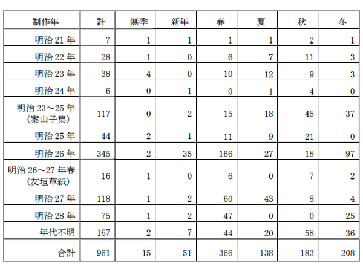

１．序
明治の文学者、藤野古白（1871（明治４）年９月22日生、1895（明治28）年４月12日没）は、愛媛松山の生れ。彼が九歳の時、一家が東京に移り、成年となってからは、東京と松山を往復するようになる。幼名、久万夫、本名、潔。正岡子規とは四歳下の従弟。明治21年頃より子規の俳句サークルにて句作し、趣向や句法の斬新さで頭角をあらわす。この頃一時重い抑鬱的精神障害に陥り、入院、治療を受ける。明治27年頃より、東京専門学校（現早稲田大学）の坪内逍遥を中心とする文芸サークルで島野抱月や後藤宙外らと活動しはじめ、明治28年に戯曲「人柱築島由来」を「早稲田文学」に発表する。この頃から自殺への決意が固まってゆき、この世の「かたみ」として精魂を傾けたこの作品も世評には上らず、28年の春ピストル自殺した。享年24歳。明治27年以降、創作の熱意が戯曲へと移っていく中でも俳句創作は継続された。ただ、子規はこれら古白の後期の俳句について、それ以前の句への肯定的な評価と打って変わって否定的な評価をするようになった。この点については、本句集末尾の解題で考察する。本句集は彼の最初期から晩年までの俳句を収集し、調査できた範囲で制作年順に並べたものである。本句集の構成としては、収集した古白の句を、まず各制作年ごとに区分した。ただし、年代の同定できなかったものについては末尾に纏め、また、子規編の「案山子集」に含まれる古白句については、別文献から年代推定できない限り、明治23〜25年として別の一括りとし、同様に後藤宙外の「明治文壇回顧録」所収の「友垣草紙」からの古白句は明治26〜27年春の句として一括りにした。各年内では、句を季（新年、春、夏、秋、冬）の順に並べたが、所謂「無季」の俳句は「雑」として末尾に置くことはせず、季名を付けずに各年の最初に置いた。各季中の配列として、各句は概ね句の季語や題材ごとに纏め並べたが、「古白遺稿」のように季語を立てて括ることはしなかった。厳密な順序付けをしたものでないことは最初にお断りしておきたい。
各句の記載では、句に引き続いてその後ろに制作日付を示した。この日付は、典拠とするものが複数ある場合は、書簡＞句会の日付＞その他の二次的情報の優先順位で定めた。作者は通常まず書簡などで子規や友人達に知らせた後日、句会という公式の場で発表するという順序をふんでいるので、句が胚胎されたインセプションの時期に最も近い時期を示していることとなる。
また各行末には、句の通し番号を※記号を付して示した。この※番号は、同時に本集中の編注番号でもある。通し番号の後ろには、「／」で区切って、出典を示す二文字のコード（「句集」、「書簡」など）を示した。この出典は、表示句についてのものであって、制作年で示された句の初期形のものであるとは限らない。複数の出典があるものについては、それらの帰属関係を「４．編注」内、「出典補足」の節で示した。なお、子規の編んだ「古白遺稿」は現在でも基本的文献であるので、それに含まれる句には「＊」の記号を句の前に付けて示した。
句の仮名遣い、漢字か仮名か、ルビ付けなどは、特に複数の出典があるような場合、かなり「揺れ」が見られるものである。仮名遣いについては、基本的に原句の旧仮名遣いのままとしたが、濁点に関しては特に解釈上の問題を引き起こさないない限り導入し、また変体仮名（「ゐ」や「ゑ」）は現代表記に置き換えた。また繰り返しのための踊り字（一の字点（ゝ、ゞ）、二の字点（
 ）、くの字点（コンピュータテキストで／＼などと代記されるもの））は字を繰り返した。「〓」は出典で判読できなかったとされた文字である。また子規の「古白遺稿」その他でも行われていることであるが、読みの不確定性を引き起こさないならば、読み易さを考慮してかなを漢字化した。（例えば、「のち」と原文にあった場合、「後」とすると「あと」とも読めるようになるので、そのような漢字化は避けた。）ルビに関しては、片仮名あるいは漢字で書かれたものは、原典にそう振られていたものである。それ以外の平仮名のものは、出典からのものか、編者が読み易さを考えてふったものかのいずれかである。複数の典拠がある場合、その間で用語の違いがまま見られる。これらについては、編注で違いを記した。
）、くの字点（コンピュータテキストで／＼などと代記されるもの））は字を繰り返した。「〓」は出典で判読できなかったとされた文字である。また子規の「古白遺稿」その他でも行われていることであるが、読みの不確定性を引き起こさないならば、読み易さを考慮してかなを漢字化した。（例えば、「のち」と原文にあった場合、「後」とすると「あと」とも読めるようになるので、そのような漢字化は避けた。）ルビに関しては、片仮名あるいは漢字で書かれたものは、原典にそう振られていたものである。それ以外の平仮名のものは、出典からのものか、編者が読み易さを考えてふったものかのいずれかである。複数の典拠がある場合、その間で用語の違いがまま見られる。これらについては、編注で違いを記した。本句集の後尾には、出典と編注を置き、また最後に解題を置いて、若干の解説を試みた。
最後に、本句集は千句足らずとはいえ、句の書き写しから始まって、制作年代の推定やクロスリファレンス作成など種々の過程を経て作られたものである。間違いを混入させないように注意を払ったつもりではあるが、それでもいろいろなミスや、入れるべき句、情報の欠落などが後日見つかることであろう。後の改訂のためにも、読者のご教示、ご指摘、ご叱正を待つ次第である。
［＃改ページ］
２．句集
今朝の汁三味線聞て十味哉 （明21-9-23）
【新年】
大皿に田作り入れて肴哉 （明21-9-23）
【春】
藤なれば見苦しくなし花垂らし （明21-11-13）
【夏】
音憎し外処 の祭りのしめ大こ （明21-9-23）
【秋】
今は雨 後の涙や秋の花 （明21-9-23）
【冬】
干す足袋の其と見まがう烏哉 （明21-9-15）
※１／書簡
【新年】
大皿に田作り入れて肴哉 （明21-9-23）
※２／書簡
【春】
藤なれば見苦しくなし花垂らし （明21-11-13）
※３／筆任
【夏】
音憎し
※４／書簡
【秋】
今は
※５／書簡
向島今を盛りのをみなへし （明21-9-23）※６／書簡
【冬】
干す足袋の其と見まがう烏哉 （明21-9-15）
※７／書簡
水底に骸骨もあり角田川 （明22-9-20頃）
【春】
＊鴬のねぐら探さん春の月 （明22-9-20頃）
【夏】
時雨るや色さまざまの夏木たち （明22-6-24）
【秋】
あの案山子敵か身方か関が原 （明22-6）
【冬】
冬ざれや止む時遠き風の音 （明22-11-29）
※８／書簡
【春】
＊鴬のねぐら探さん春の月 （明22-9-20頃）
※９／書簡
降りつづき蛙落葉に籠りけり （明22-7-13）※10／書簡
春雨や行水清し橋の下 （明22-5-31）※11／書簡
蝶々のとまり定めぬ今日の風 （明22-5-31）※12／書簡
傘で露払ひたる柳哉 （明22-6-24）※13／書簡
朝は霧夕は霞や東山 （明22-9-20頃）※14／書簡
【夏】
時雨るや色さまざまの夏木たち （明22-6-24）
※15／書簡
木の葉漏る露に散りけり芥子の花 （明22-6-27）※16／書簡
松どもの祭り見に行けつばくらめ （明22-5-31）※17／書簡
ほととぎす血を吐ききつた秋の暮 （明22-10-4）※18／書簡
水せくや沈むばかりの松の影 （明22-6-27）※19／書簡
涼しさや濡るるもうれし柳影 （明22-6-27）※20／書簡
雨晴れて急に忙し群すずめ （明22-6-24）※21／書簡
【秋】
あの案山子敵か身方か関が原 （明22-6）
※22／夭折（年表）
月の野をひびかす音や水車 （明22-9-14）※23／案山
＊八月や月になる夜を寝てしまひ （明22-9-20頃）※24／書簡
京都にて（とあとから）
菊の香や浮世の人は知らぬもの （明22-9-14）※25／書簡
松影や月ぶらさげて風の音 （同）※26／書簡
名月や桂の花のもみちかな （同）※27／書簡
夜長し蛍も行きて雪もなし （同）※28／書簡
祇園精舎日本中に鐘の声 （同）※29／書簡
秋の是の空いつぱいや星月夜 （明22-9-12）※30／夭折（真砂の志良辺）
朝霧に日を月と見る寝起哉 （明22-5-31）※31／書簡
船の酔船で醒まさん20TH'S月 （明22-7-15）※32／書簡
【冬】
冬ざれや止む時遠き風の音 （明22-11-29）
※33／書簡
傘にしばしばとまる落葉哉 （明22-6-27）※34／書簡
木枯や渋柿ひろふ僧の顔 （明22-9-20頃）※35／書簡
する墨に調子合すや水の音 （明23-5-3）
【春】
江戸の花水に流すや竜田川 （明23-9秋）浪 藉春の暮 （明23-4-10）
【夏】
滝壺に牡丹けこむや獅子の爪 （明23-3-19）柵 や浮草に蝶のとまりけり （明23-5下旬）
【秋】
＊蘆のかげに何雲動く湖の月 （明23-9-10）
【冬】
顔つつむ手拭はらふ風寒し （明23-4-3）
※36／書簡
緋歌囃白雲過
ゆきやらぬ雲やいづこのきこり歌 （明23-9-20）※37／書簡
行雲や雨は淡路か須磨明石 （明23-5-3）※38／書簡
松風に舟べり叩けひはの海人 （明23-9-10）※39／書簡
【春】
江戸の花水に流すや竜田川 （明23-9秋）
※40／書簡
＊静かさや雨に暮れ行く山桜 （明23-4-3）※41／書簡
若鮎の岩に矢を射るいさみ哉 （明23-5-3）※42／書簡
若鮎も時雨るる土手の柳かな （明23-3-19）※43／書簡
鴬も年とりにけり今朝の春 （明23-3-3）※44／書簡
ぶらさかる藤は危なし雀の子 （明23-5-3）※45／書簡
梅か香や薮うぐいすや置こたつ （明23-3-3）※46／書簡
梅咲きぬ鶯をまつ身とならば （明23-12-14）※47／書簡
雪隠に落花※48／書簡
春夏に橋かけ渡す池のふち （明23-5-3）※49／書簡
【夏】
滝壺に牡丹けこむや獅子の爪 （明23-3-19）
※50／書簡
親の恩かさねて着るや夏衣 （明23-5-3）※51／書簡
花をすてて心涼しや夏衣 （明23-5-5）※52／書簡
夏の夜をなき静めたる蛙哉 （明23-5下旬）※53／書簡
川風や蛍もなくか葦の音 （明23-5-3）※54／書簡
小家の火も籠に入れたし蛍狩 （明23-5下旬）※55／書簡
星を手につかむ闇夜の蛍哉 （明23-5下旬）※56／書簡
人はいさ心も知らずほととぎす （明23-5-3）※57／書簡
＊時鳥一声に月落ちにけり （明23-5-12）※58／書簡
余所の妻のくれる心やあやめ草 （明23-5-3）※59／書簡
浮草の心しきりや水の底 （明23-5-12）※60／書簡
※61／書簡
【秋】
＊蘆のかげに何雲動く湖の月 （明23-9-10）
※62／書簡
＊梟の夜も眠らん秋の雨 （明23秋）※63／書簡
石山よりの端書本日受取り候清遊羨しさ限りなし吾もいつかと思い立候
＊といふていつ曇るやら秋の月 （明23-9初旬か）※64／遺稿
更行けば壁に耳あり鐘の声 （明23-9-20）※65／書簡
秋風の立つた日からや空の冴ひ （明23-9-20）※66／書簡
秋暮れぬ海の果てなる立田川 （明23-12-14）※67／書簡
女郎花ほろりと散るや秋の風 （明23-9-20）※68／書簡
消えさうな薄に立つや野の煙 （明23-9-20）※69／書簡
傾城か墓参の道やとろろ雨 （明23-5-3）※70／書簡
【冬】
顔つつむ手拭はらふ風寒し （明23-4-3）
※71／書簡
塩売りの足元さむし霜の朝 （明23-12-14）※72／書簡
うどん売る声遠ざかりゆき （明23-4-3）※73／書簡
【新年】
【夏】
雨やどり松抱いて見る野径かな （明24-2-28）
【秋】
＊今朝見れば淋しかりし夜の間の一葉かな （明24秋）
元日にあられふりければ
＊ゆずり葉にこは年玉の霰哉 （明24-1-1）※74／書簡
【夏】
雨やどり松抱いて見る野径かな （明24-2-28）
※75／書簡
【秋】
＊今朝見れば淋しかりし夜の間の一葉かな （明24秋）
※76／夭折（年表）
昨夜ふけて雨をきく句あり
空あるく月や怪我して夜の雨 （明24-2-28）※77／書簡
吹風にらんぷ消されて窓の月 （明24-9頃か）※78／句会
＊芭蕉破れて先住の発句秋の風 （明24秋）※79／夭折（年表）
【新年】
初夢や寝覚に見たる額の不二
【春】
つばくろに生娘袖をかざしけり衣紋 くずすや春の風
【夏】
谷川は闇の底なる鵜舟かな夜明け 青し子規白丁 ひとり遅れけり水鶏 哉
【秋】
朝 ぱらりぱらり
【冬】
陸に来てすにまじりたる海鼠
初夢や寝覚に見たる額の不二
※80／案山
＊君が代や大根畠に子の日せん※81／案山
【春】
つばくろに生娘袖をかざしけり
※82／案山
＊鶯や広野あたりの夕霞※83／案山
＊鶯や若菜洗ひし井戸の端※84／案山
＊新海苔や誰か袖か浦紺ちちぶ※85／案山
＊色々に田の月動く蛙哉※86／案山
憂き人の輝かしさや花の蔭※87／案山
＊花を折つてふり返て曰くあれは白雲※88／案山
蝶々のまなこくらみぬ散る桜※89／案山
重ければ財布棄つべし山桜※90／案山
梟の夢盗まばや山桜※91／案山
山吹の散りたるは皆一重哉※92／案山
＊小式部の※93／案山
春立つや都大路は橋かかり※94／案山
麦を出て海の上なり揚ひばり※95／案山
＊井のほとり鶯のちよこちよこ走りけり※96／案山
【夏】
谷川は闇の底なる鵜舟かな
※97／案山
＊唐獅子にうき名の辛き牡丹哉※98／案山
尼寺のやり水清し夏の菊※99／案山
雨戸ひく音に散りけり芥子の花※100／案山
柴舟の影水にあり夕蛍※101／案山
わが庵の灯もある野辺の蛍哉※102／案山
＊濁り江のあやめに澄みぬ五月雨※103／案山
河筋の※104／案山
＊時鳥すはやよせ来る磯の波※105／案山
時鳥※106／案山
連立て押かけて来る※107／案山
扇折聞けば歌よむ女哉※108／案山
汗くさき芭蕉の庵や土用干※109／案山
蝿のむれ峠の馬を追いかけぬ※110／案山
近江から雲を目がけつ富士詣※111／案山
涼しさに木丁をまくる腕かな※112／案山
闇涼し大師河原の石の音※113／案山
蓮の香や空に浮出る月一つ※114／案山
【秋】
震災のあと（案山子集）／浜松泊（古白遺稿）
＊つぶれ家は何処に泣く子をきりぎりす※115／案山・遺稿
霧の中案山子に交じる乞食哉※116／案山
かつ散りて残る木ずえの一葉哉※117／案山
山門を出て
荻に風思ふことなき別れかな※118／案山
荻の声乞食無言の夕哉※119／案山
焼場から畑たなびく花野哉※120／案山
月暗し雨の上行く雁の声※121／案山
菊にして真砂〓茂り海人の垣※122／案山
＊夜咄の夫よび戻す砧かな※123／案山
＊栗拾はばや先ずは主無き山尋ねばや※124／案山
乞食の名のり合けり橋の月※125／案山
三井寺の月夜によりし乞食哉※126／案山
緋鯉はねて折々さそふ紅葉哉※127／案山
紅葉はのうら流れ行小川哉※128／案山
鴫たちて乞食這出るかし間哉※129／案山
秋の蚊に骨を吸わるる乞食哉※130／案山
＊秋海棠朽木の露に咲きにけり※131／案山
眺むれば真帆も動かず秋の水※132／案山
二三〓〓の扇にさ〓〓秋の蝶※133／案山
＊秋風のさわぐ柱や団扇かけ※134／案山
＊大阪や屋根の上吹く秋の風※135／案山
百丈の崖のはざまを秋の風※136／案山
かけものの烏とはさむ秋の暮※137／案山
＊耳づくの耳立てて居る秋の暮※138／案山
秋の夜やさりとてあくび一つ出ず※139／案山
秋の夜を立ちあかしたる案山子哉※140／案山
初雁の空の白きに青む哉※141／案山
初紅葉かきさ〓〓〓〓額田王※142／案山
＊牛牽いて川渡りけり今朝の秋※143／案山
初嵐乞食の骨になる夜かな※144／案山
女郎花馬一口に喰らひけり※145／案山
朝顔や朝はものなき乞食小屋※146／案山
＊乞食の二百十日も死なずして※147／案山
こぼれ萩露もこぼれて〓にけり※148／案山
萩原や露ふる程の月あかり※149／案山
花薄招く袖なき乞食哉※150／案山
白浪の折々くらし月の隈※151／案山
名月や乞食の女髪洗ふ※152／案山
＊名月や花見衣装の物すごき※153／案山
名月やものかげに立つ物もらい※154／案山
＊南天や野分の※155／案山
江の秋や百歩一風散る柳※156／案山
引塩や〓〓〓〓なく散柳※157／案山
露暗し椎の実の散る笹の音※158／案山
袖乞に浮名の立ちしうづら哉※159／案山
【冬】
陸に来てすにまじりたる海鼠
※160／案山
山守の橋渡り行寒さ哉※161／案山
＊夜もすがら鐘撞く人の寒さ哉※162／案山
寒月や長屋に夫婦喧嘩あり※163／案山
寒月をとりまいて鳴く千鳥哉※164／案山
旅僧に火鉢すすめん寒椿※165／案山
折らで止む狂僧しばし帰花※166／案山
帰り花月に見出す寒さ哉※167／案山
一本は雪が生へたか枯尾花※168／案山
年々のふる根に高し枯尾花※169／案山
見渡して跡をふりむく枯野哉※170／案山
枯蘆やむじな糞する朝月夜※171／案山
行年に羽根がはへてや夜半の雁※172／案山
行く年や追いかけて渡す哥一首※173／案山
＊江を横に露の松原や時雨あと※174／案山
大橋は時雨の中の小橋哉※175／案山
水仙の白きを見れば霜夜かな※176／案山
水仙や雨戸の外の縁の霜※177／案山
星ほどの影や月夜の水仙花※178／案山
海にふる雪積み上げて島ひとつ※179／案山
ひよ鳥の声鳴きやんで雪模様※180／案山
＊雪に鳴く鴉の声は黒いもの※181／案山
雪の夜や島をはなれて淡路島※182／案山
淡路島住吉かけて鳴千鳥※183／案山
鳴くなかに帆柱きしる千鳥哉※184／案山
引塩に網手きしるや浦千鳥※185／案山
茶の花や鼠首出す片折戸※186／案山
茶の花や薮から見ゆる寺の門※187／案山
茶の花に煙草のけぶり静なり※188／案山
村時雨湖水の中の湖水哉※189／案山
雪舟の七つ道具か冬木立※190／案山
はげ山のいくつ重なる冬木立※191／案山
冬木立牛の背中に鳥のふん※192／案山
うき恋を海に泣らん網代守※193／案山
鶏に下駄はかせたる落葉哉※194／案山
凩や落ちて割れたる鬼瓦※195／案山
凩や小僧出て来る寺の門※196／案山
とんねるを吹ぬいてくる嵐哉 （明25-9-6）
【新年】
＊天竺や小松引く野の仏達 （明25-4）
【春】
＊奥山や鈴がら振つて呼子鳥 （明25-4）
【夏】
卯の花を雪と見てこよ木曾の旅 （明25-5頃）
【秋】
白露のひびきを桐の一葉哉 （明25-9-28）ぎぎ でままを食べて出懸ぬ橋の月 （明25-8-30）ゝ ほととぎす （明25-11-6）十六夜 の曇りになきぬ海の上 （明25-10-12）
※197／書簡
吹く風をたもとに分かつ別れ哉 （明25-7-5）※198／書簡
【新年】
＊天竺や小松引く野の仏達 （明25-4）
※199／句会
【春】
＊奥山や鈴がら振つて呼子鳥 （明25-4）
※200／句会
行春や笠あげて呼ぶはせを翁 （明25-4）※201／句会
＊散る時は一重なりけり八重桜 （明25-4）※202／句会
花捨て珍書いろいろ山の奥 （明25-2-26）※203／書簡
＊山焼くや窓でながめて庭へ出て （明25-4）※204／句会
＊鹿の角月にうつして落としけり （明25-4）※205／句会
暮れて行春や田面の夕しめり （明25-5-10）※206／書簡
＊春雨や京は町並琴の声 （明25-2頃）※207／夭折（年表）
花盛り練馬の野辺にふす駄馬 （明25-4）※208／句会
旅人に物申らんちぎれ凧 （明25-4）※209／句会
鶯に障子ひと重の隔てかな （明25-4-6）※210／書簡
【夏】
卯の花を雪と見てこよ木曾の旅 （明25-5頃）
※211／掛橋
葉隠れの蝶もまぎらし瓜の花 （明25-7-25）※212／書簡
奥のなき社に奥有雲の峯 （明25-7-25）※213／書簡
山路をりをり悲しかるべき五月哉 （明25-5頃）※214／掛橋
垣の外に泣く子も通る祭り哉 （明25-7-25）※215／書簡
耳せわし両方に鳴く蝉のこえ （明25-7-25）※216／書簡
すくむ身の尻に冷たし苔の花 （明25-7-25）※217／書簡
大阪二句
＊橋涼みここにも金の咄かな （明25-8-24）（同）※218／書簡
＊涼みとは橋の名所か水の上 （同）※219／遺稿
【秋】
白露のひびきを桐の一葉哉 （明25-9-28）
※220／書簡
蝿の飛ぶ力も菊のそよぎ哉 （明25-7-25）※221／書簡
髪を削りて
＊南とも北とも言はず秋の風 （明25-9-頃）※222／案山
剃髪して
＊髪剃りて留守頼まれつ寺の月 （明25-9-頃）※223／遺稿
＊月白し洞雲院の屋根瓦 （明25-9頃か）※224／遺稿
明け方のふけにふけたる月夜哉 （明25-5-10）※225／書簡
箱根にて
五つ六つ空に月みる今宵哉 （明25-9-6）※226／書簡
歌はやな月も別れのうらみあり （明25-7-25）※227／書簡
海暗し後ろに曇る橋の月 （明25-8-30）※228／書簡
※229／書簡
澄む月や水底を逝く水の音 （明25-5-10）※230／書簡
ふり出でて朱塗の月※231／書簡
昨夜深更に帰着仕候道中処々
松風や音のせぬ時月に吹 （明25-9-6）※232／書簡
湖に擬宝珠立ちけり橋の月 （明25-8-30）※233／書簡
※234／書簡
文月や〓〓よりまつ〓に東山 （明25-8-25）※235／書簡
名月のあとや一夜は海の雨 （明25-10-12）※236／書簡
名月の曇りて水は流れけり （明25-10-12）※237／書簡
白雲を松の木の間に露寒し （明25-9-28）※238／書簡
露寒し草にからびし牛のふん （明25-9-28）※239／書簡
塩尻のとかく目に付旅寝かな （明25-7-25）※240／書簡
橋立や文もおもはぬ僧一人 （明26-1-15）
【新年】
叔母御前に指輪もらひつ玉の春 （明26-1-3）荵 の日向哉 （明26-1-22）懐手 （明26-1-15）草鞋 新らし日の始 （明26-1-3）弟 に包む振りの袖 （明26-1-15）屋婦入 や祖母と孫とは将戯さす （明26-1-15）
【春】
たんぽぽや鍬を洗ひし石の水 （明26-1-30）交野 の奥の薮つつき （明26-1-3）帋燭 哉 （明26-1-15）傘明 り （明26-1-30）寄居虫 や折々は来る井戸の水 （明26-1-30）虎杖 や熊笹になる薮の奥 （明26-1-30）木魂 に散るや湧か淵 （明26-3-4）出代 や葛籠のければ焼畳 （明26-1-30）簾 （明26-2-18）棧橋 や谷もおもはず春の山 （明26-1-15）兀 と青みけり （明26-1-30）蹈 石に散る鱗哉 （明26-1-30）須磨 の浦に真砂拾はん差し柳 （明26-1-15）纜 とけば陸へ飛び去る胡蝶哉 （明26-3-4）明 く音や田螺鳴 （明26-1-30）岨路 に落た跡ありつくつくし （明26-1-30）柵 かけし吉野河 （明26-1-30）梺 かな （明26-1-22）杯 皿一杯の白魚哉 （明26-1-3）筧 は山の雪ならん （明26-1-3）潮 に沈む鶴の糞 （明26-1-3）拾 ふかひもがな （明26-3-4）磯馴松 （明26-1-30）畦 に荷を置く豆腐売 （明26-1-30）間 はねる雫哉 （明26-1-22）昨夜 見し月のあたりや雉の声 （明26-1-15）
【夏】
鵜飼見に闇を尋ぬる狂女哉 （明26-5-28）鉄漿 をつけてけり （明26-5-28）兀 山の淋しき夜の青田哉 （明26-5-28）歩行網 の小川せせりや青嵐 （明26-5-28）燕子花 洛陽を出て寺一つ （明26-5-28）杜若 （明26-5-28）杜若 （明26-5-28）粽 哉 （明26-5-28）解 く手に香の残りたる粽哉 （明26-5-28）
【秋】
雁上に山下に月は出づる哉 （明26-7-6）駅屋 かな （明26-9-10）児 の顔 （明26-9-10）生身魂 （明26-9-10）
【冬】
あかぎれや花売の手に梅がつく （明26-1-15）長嘯 す （明26-12-3）駅 になりぬ干大根 （明26-1-22）終夜 人音絶へぬ師走哉 （明26冬）姑蘇 城外の夕時雨 （明26-12-3）厨 に響く時雨かな （明26-12-3）菴 の木立哉 （明26冬）白鵞 雪を離れてすらと浮出る渚哉 （明26冬）御車 を大路に立てて夜の雪 （明26-11-17）明 りに星ひとつ （明26-1-30）雪車 にも旅の疲れ哉 （明26冬）嫗 が茶屋 （明26冬）柵 かけて椿哉 （明26-1-3）啖 ふて垣まばら也冬籠 （明26冬）ぢ 仏棚 （明26冬）催 ひ （明26冬）奢 めかして今朝の雪 （明26-12-3）夜興 引きや我が撃つ丸 を妹聞くらんか （明26-11-19）敏 し拳 鷹 （明26冬）榾 焚いてわが影に泣くうらみかな （明26-1-22）
※241／句会
凡調は凡兆に入るの門 （明26-11-17）※242／書簡
【新年】
叔母御前に指輪もらひつ玉の春 （明26-1-3）
※243／句会
羽子かかる軒の※244／句会
遣羽子や馬車を止めたる振りの袖 （明26-1-3）※245／句会
猿引きの猿に抜かする白髪哉 （明26-1-22）※246／句会
猿引きの妻になりけり小傾城 （明26-1-3）※247／句会
恵方にや鐘つきの出る寺の門 （明26-1-3）※248／句会
元日や未だ平家のさかる時 （明26-1-3）※249／句会
左義長や比丘尼見送る姉弟 （明26-1-3）※250／句会
子の日するあたりまばゆき夕日哉 （明26-1-15）※251／句会
子の日とて背戸の小松を引にけり （明26-1-3）※252／夭折（句会稿）
野鼠のあとにもの引く子の日哉 （明26-1-3）※253／句会
業平も野辺に来る日や若菜摘 （明26-1-3）※254／句会
若菜摘む行逢ふ度にこぼしけり （明26-2-18）※255／句会
鶴の子の乳母に雇はん初烏 （明26-1-3）※256／句会
初空やふりさけみたる裏の山 （明26-1-3）※257／句会
橋を行灯のおびただし初芝居 （明26-1-15）※258／句会
初東風や鶴の屁ほどの松の音 （明26-1-3）※259／句会
初東風や真葛の原の朝朗 （明26-1-3）※260／夭折（句会稿）
初東風や三浦三浦のあなたより （明26-1-3）※261／夭折（句会稿）
船頭の初夢山をみて帰る （明26-1-3）※262／句会
二枚目は花も咲きけり初暦 （明26-1-3）※263／句会
＊山社松の木の間の松飾 （明26-1-3）※264／句会
かんざしに薄氷くだけ水祝ひ （明26-1-3）※265／句会
蔵開塗長持を射す日哉 （明26-1-15）※266／句会
鳥追の帰るや野辺の※267／句会
山伏の※268／句会
年玉や※269／句会
万歳の海見て来るや須磨の里 （明26-1-3）※270／句会
万歳や烏帽子の影は御簾の内 （明26-1-22）※271／句会
松風に浮かれ出しけり謡初 （明26-1-15）※272／句会
＊傀儡師日暮れて帰る羅生門 （明26-1-3）※273／句会
乙女子か日影短し傀儡師 （明26-1-3）※274／夭折（句会稿）
痩せはてて梅に立ち寄る傀儡師 （明26-1-3）※275／夭折（句会稿）
雪踏みて越路出てくる傀儡師 （明26-1-3）※276／夭折（句会稿）
※277／句会
【春】
たんぽぽや鍬を洗ひし石の水 （明26-1-30）
※278／句会
虻の来て障子あけさす日和哉 （明26-1-22）※279／句会
踏破る袴の泥や揚雲雀 （明26-3-4）※280／句会
つばくらや又飛び出る橋の下 （明26-2-18）※281／句会
鶯や※282／夭折（句会稿）
鶯や水に輪をかく棹雫 （明26-1-22）※283／句会
鶯や上見て居れば飛んで行 （明26-2-18）※284／句会
鶯や由良の戸渡る帆立て貝 （明26-1-3）※285／句会
唐崎や鶯二ツ松の中 （明26-1-15）※286／句会
下萌やそぼ降る雨に鍬のさび （明26-1-15）※287／句会
老か汲水こぼしけり花の影 （明26-2-18）※288／句会
行水や花にせかるる夜の音 （明26-2-18）※289／句会
留守もりに座頭雇ふて花見哉 （明26-2-18）※290／句会
散る花や汲みては流す水車 （明26-1-30）※291／句会
谷底や木曽は月見る花曇 （明26-1-3）※292／句会
曙や香の煙りに軒霞む （明26-2-18）※293／句会
海見えで浜は草屋の霞哉 （明26-2-18）※294／句会
峯の松傘さし並ぶ霞哉 （明26-1-22）※295／句会
八重霞一重は富士の雪ならし （明26-1-15）※296／句会
海苔干すや簾の下の潮雫 （明26-2-18）※297／句会
海棠の雫に消ゆる※298／句会
罪のなき笑顔も通る絵踏み哉 （明26-1-30）※299／句会
芥子わかば乳女が畑の垣の外 （明26-3-4）※300／句会
黄昏や蛙鳴く田の※301／句会
山陰の尼寺くらき蛙かな （明26-1-15）※302／句会
※303／句会
＊帰る雁沖白う夜は風寒し （明26-3-4）※304／句会
野に折りし梅を片荷や菊の苗 （明26-1-22）※305／句会
曲水の末は鍋蓋洗ふなり （明26-3-4）※306／句会
袂から小川にこぼす芹菜哉 （明26-1-22）※307／句会
芹をつむ籠より金の指輪哉 （明26-1-3）※308／句会
※309／句会
＊菜の花や末寺の見ゆる麓まで （明26-3-4）※310／句会
討死の夢みる顔や散る桜 （明26-2-18）※311／句会
馬の尾は結んで花に繋ぎけり （明26-3-4）※312／句会
蜂の子に袖打払ふ花の壺 （明26-3-4）※313／句会
巻頭
＊水の上に余り重たし八重桜 （明26-頃）※314／夭折（句会稿）
山吹の※315／句会
＊山吹の濡れてひつつく折戸かな （明26-3-4）※316／句会
山吹や崖にかけたる丸木橋 （明26-3-4）※317／夭折
山吹や御所の裏手の小笹薮 （明26-3-4）※318／夭折
山吹や橋の朽目に雀の巣 （明26-1-3）※319／句会
感吟
＊手すさびに桑摘む姫や紙蚕 （明26-頃）※320／夭折
＊松風も村雨もあり須磨の雛 （同）※321／夭折
若草にふくさを敷て休みけり （明26-2-10）※322／書簡
若草は未だ松かげと散る松葉 （明26-2-10）※323／書簡
若草やいまだ揃はぬ小笹かき （明26-1-15）※324／夭折
若草や器の漏りて酒雫 （明26-2-10）※325／書簡
若草や下駄の泥つく渡し舟 （明26-2-10）※326／書簡
若草や汐のとどかぬ洲浜まで （明26-2-10）※327／書簡
＊若草や寝よげに見ゆる野辺の月 （明26-2-10）※328／書簡
若草や野中に見ゆる橋一つ （明26-2-10）※329／書簡
若草や野は月の出をひと霞 （明26-2-10）※330／書簡
若草や花見小袖を染める頃 （明26-2-10）※331／書簡
若草や門出る時は懐手 （明26-2-10）※332／書簡
若草や門は簑干す柳影 （明26-2-10）※333／書簡
若草や若草をくふ馬の鼻 （明26-2-10）※334／書簡
若草を踏付けて鶴のあゆみかな （明26-2-10）※335／書簡
※336／句会
出代や母なき児の別れうし （明26-1-30）※337／句会
逢坂や春とはいへど鐘もなし （明26-1-15）※338／句会
春めくや日々近し雉子の声 （明26-1-30）※339／句会
春雨の音の絶間や水車 （明26-1-30）※340／句会
春雨や海を木陰に松ひと木 （明26-3-4）※341／句会
春雨やばちの濡れたる琵琶の音 （明26-1-22）※342／句会
はる雨やヒヨンな義理から松宿り （明26-1-30）※343／句会
春雨や山見ゆる程捲く※344／句会
富士程の帆かけ浮きけり春の海 （明26-1-15）※345／句会
※346／句会
京越えて住吉見ゆや春の山 （明26-3-4）※347／句会
滄浪の渚に清し春の水 （明26-1-3）※348／句会
水ぬるむ山ふところに入日哉 （明26-1-15）※349／句会
春の雪雫目にふく木立哉 （明26-1-22）※350／句会
春の日の京めぐりして暮にけり （明26-3-4）※351／句会
春風や日くれて沖の真帆片帆 （明26-2-18）※352／句会
春風や沖へ流るるいさり舟 （明26-1-22）※353／句会
春風や蛤籠の捨てたまま （明26-1-3）※354／夭折（句会稿）
渡し呼ぶ舞扇あり春の暮 （明26-1-22）※355／句会
春の夜や鶯とまる大悲閣 （明26-1-30）※356／句会
春の野や牛飼鞭を挙ぐる暮 （明26-1-22）※357／句会
春立て蜀山※358／句会
初花の便りちらほら聞えけり （明26-1-30）※359／句会
初花や月の出がけの風の音 （明26-1-30）※360／句会
初鮒の※361／句会
丸木橋人に驚ろく小鮎哉 （明26-3-4）※362／句会
薄月や小雨そぼふる焼野原 （明26-3-4）※363／句会
佐保姫の焼け出されたる焼野哉 （明26-1-30）※364／句会
長安へ帰る道々焼野哉 （明26-1-15）※365／句会
とぼとぼと児のさまよふ焼野哉 （明26-1-30）※366／句会
富士か根の白く残りたる焼野哉 （明26-3-4）※367／句会
星山に落ちて焼野は夜の雨 （明26-1-30）※368／句会
青柳の糸にかがらむ嫁菜籠 （明26-1-30）※369／句会
一昨日目黒比翼塚にて
青柳の枯れて何年鶯は （明26-3-21）※370／書簡
青柳の中に囲ふや差し柳 （明26-2-18）※371／句会
※372／句会
草の餅艸といふ字は緑哉 （明26-3-4）※373／句会
草餅や椎の葉にもる峠茶屋 （明26-3-4）※374／句会
一箱は京へ土産や草の餅 （明26-3-4）※375／句会
松風に凧のとどくや東山 （明26-1-22）※376／句会
淡雪や高塀の上の星の数 （明26-2-18）※377／句会
てふてふや何に紛れて玉すだれ （明26-1-3）※378／句会
※379／句会
長閑さにひさご捨てたき流れ哉 （明26-1-22）※380／句会
＊のどかさは泥の中行く清水かな （明26-3-4）※381／句会
のどかさや浅間にけぶる春の空 （明26-3-4）※382／句会
長閑さや海を隔ててかすむ鐘 （明26-3-4）※383／句会
長閑さや小田の畦こす水の音 （明26-3-4）※384／句会
長閑さや舟に寝に行渡し守 （明26-1-15）※385／句会
椿 過
赤椿盛りは過て小半月 （明26-2-18）※386／夭折（句会稿）
椿 現
落椿現在掃いた庭にして （明26-2-18）※387／夭折（句会稿）
椿 未
薮陰は雪未だ消えず赤椿 （明26-2-18）※388／夭折（句会稿）
松風に戸の※389／句会
尻に敷く笠に折れけり土筆 （明26-1-30）※390／句会
※391／句会
赤土や散りてひつつく桃の花 （明26-1-30）※392／句会
真顔なる旅人通る二月哉 （明26-2-18）※393／句会
二日灸粟の飯さへ煮過ぬ （明26-2-18）※394／句会
如月や※395／句会
如月や屋根ふく茶屋に散る松葉 （明26-1-30）※396／句会
江の梅や夜舟漕去るあとの月 （明26-2-18）※397／句会
紅梅や後ろに高きやぐら台 （明26-3-4）※398／句会
紅梅や道前道後朝日影 （明26-3-4）※399／句会
鐘楼の梅に余音の匂ひ哉 （明26-1-22）※400／句会
雪隠に手を出す枝や梅の花 （明26-2-18）※401／句会
山は梅酒屋はぬくき※402／句会
月影をくぐつて嗅くや梅の花 （明26-1-22）※403／句会
網※404／夭折（句会稿）
川裾に白魚霞む四手哉 （明26-1-22）※405／句会
白魚と読み上げて居る哀れ哉 （明26-1-3）※406／夭折（句会稿）
白魚の網たどたどし帆立て貝 （明26-1-3）※407／夭折（句会稿）
白魚や只凄しき岩の波 （明26-1-3）※408／夭折（句会稿）
白魚や海苔食ひにくる袖が浦 （明26-1-3）※409／句会
白魚や藻にからみたる笠のひも （明26-1-15）※410／句会
白梅に※411／夭折（句会稿）
白梅や香は隔てねど竹の垣 （明26-1-22）※412／句会
白梅や小袖に包む花の露 （明26-1-3）※413／句会
畑打つや島のあなたは船頭哥 （明26-1-15）※414／句会
蛤や※415夭折（句会稿）
我恋の蛤※416／句会
飯蛸やまた舟つなぐ※417／句会
寺道の掃除も届く彼岸哉 （明26-1-30）※418／句会
花咲かぬ寺なき京の彼岸哉 （明26-1-30）※419／句会
窓に見る山々青し百千鳥 （明26-1-22）※420／句会
百千鳥未だ旅人の吉野山 （明26-2-18）※421／句会
苗代に手持不沙汰の案山子かな （明26-1-30）※422／句会
苗代や※423／句会
百万の人の命や苗代田 （明26-1-30）※424／句会
薮陰や木曽を眺めて蕗の薹 （明26-1-30）※425／句会
山守のけさ来る音や蕗の薹 （明26-1-15）※426／句会
神垣を鹿ふみ破る木の芽哉 （明26-3-4）※427／句会
近よれば門は朽たり梅柳 （明26-1-15）※428／句会
柳から四五※429／句会
我恋は首もくくれぬ柳哉 （明26-1-3）※430／句会
寺を出れば山門はまだ余寒哉 （明26-1-22）※431／句会
余寒今だ白はすさまじ博多帯 （明26-1-3）※432／句会
糸遊や山駕籠おろす松の陰 （明26-3-4）※433／句会
陽炎や砂利も落さぬ石仏 （明26-1-30）※434／句会
陽炎を背中に牛の眠り哉 （明26-1-30）※435／句会
揚きびの在所は淋し梨の花 （明26-1-3）※436／句会
かくて猶死なぬぞあはれ猫の恋 （明26-1-30）※437／句会
囀や小窓に青く松映る （明26-1-22）※438／句会
谷へ出て逃げた顔也孕み鹿 （明26-1-15）※439／句会
月朧ろ苫のみ並ぶ湊かな （明26-1-22）※440／句会
行水に針も障らぬ薊かな （明26-1-22）※441／句会
雉鳴くや焚木へし折る麓茶屋 （明26-1-30）※442／句会
※443／句会
【夏】
鵜飼見に闇を尋ぬる狂女哉 （明26-5-28）
※444／句会
鵜のみかは鵜匠も魚は飽足らじ （明26-5-28）※445／句会
一輪は召されて行きし牡丹哉 （明26-5-28）※446／句会
夏の夜や蛙の声に水が湧く （明26-6-24）※447／書簡
＊蚊柱や蚊柱や三十三間堂 （明26-5-28）※448／句会
＊運慶は鬼の皮たく蚊遣かな （明26頃）※449／夭折（俳諧十六家）
通ぬけ無用と書けり栗の花 （明26-5-28）※450／句会
追う人に野川見せゆく蛍哉 （明26-5-28）※451／句会
櫛の歯にとき落したる蛍哉 （明26-5-28）※452／句会
土手近き小田の葦間や行々子 （明26-5-28）※453／句会
飛ぶに身の夏痩せ軽ろし子規 （明26-6-24）※454／書簡
牧狩や山の後のほととぎす （明26-5-28）※455／句会
夜すがらや伏屋は山の時鳥 （明26-5-28）※456／句会
初茄子花嫁※457／句会
※458／句会
※459／句会
百姓のひようと投たる早苗哉 （明26-6-24）※460／書簡
夕雨やひとつ残りし藻刈舟 （明26-5-28）※461／句会
※462／句会
泥鍬の洗ふ間もなし※463／句会
比叡うつる御所の御池や※464／句会
月白し木の下闇の雨たまり （明26-5-28）※465／句会
荷車に菅傘伏せて※466／句会
※467／句会
宮守の五六把さげし粽哉 （明26-5-28）※468／句会
蟇
畏て三日月拝む晒面哉 （明26-5-28）※469／句会
埒明ぬ蟇の目玉や軒の雨 （明26-5-28）※470／句会
【秋】
雁上に山下に月は出づる哉 （明26-7-6）
※471／夭折（句会稿）
機織の鞍壺叩く※472／句会
機織の逃ては向ふ※473／句会
機織や砧の果の月明り （明26-9-10）※474／句会
機織やそこらここらの露溜り （明26-9-10）※475／句会
機織やその月影も朧なる （明26-9-10）※476／句会
機織や藁を揃ゆる納屋の口 （明26-9-10）※477／句会
梅龕 を悼む
＊稲妻の届かずなりぬ苔の下 （明26-10-21）※478／書簡
けふまた子を喪ひたる人に
手向とて咲た菊よる涙哉 （明26-10-21）※479／書簡
＊送火や燃えたつ程にかしこまる （明26-8-29）※480／書簡
行水は井戸端ばかり月夜哉 （明26-6-24）※481／書簡
秋立つや木曽の麻衣さはさはと （明26-7-6）※482／夭折（句会稿）
顔見れは笑ひ玉いぬ※483／句会
団栗の落ちたる闇の地獄谷 （明26-7-6）※484／夭折（句会稿）
＊朝顔に女の結ひし垣根かな （明26頃）※485／夭折（俳諧十六家）
文月の空くすぶりて夜明哉 （明26-9-2）※486／書簡
通りぬける御下屋敷の夜寒哉 （明26-3-4）※487／句会
此頃の水の濁りや散る柳 （明26-9-10）※488／句会
【冬】
あかぎれや花売の手に梅がつく （明26-1-15）
※489／句会
滝枯れて三千丈のつららかな （明26-1-30）※490／句会
＊うき人の目口鼻書く火桶哉 （明26-12-3）※491／句会
幅をする手の小ささよ桐火鉢 （明26-12-3）※492／句会
藻の中に沈んで見えぬ海鼠哉 （明26-1-15）※493／句会
鴨なくや鶴首の女※494／句会
客去て空徳利の寒さかな （明26冬）※495／句会
吹風に星のちらつく寒さ哉 （明26冬）※496／句会
寒月や木曽冬ざれの空曇 （明26-12-3）※497／句会
寒声に京と近江の人もがな （明26-12-3）※498／句会
寒声の一際高し狐鳴く （明26-12-3）※499／句会
寒声や跡は野寺の鐘の音 （明26-12-3）※500／句会
寒念仏熊野の奥を出でにけり （明26-12-3）※501／句会
ばばが申す唇あかし寒念仏 （明26-12-3）※502／句会
薮を出て※503／句会
＊冬木立奥は社の鏡かな （明26-12-3）※504／句会
京入りも明日といふ夜や桐火桶 （明26-1-15）※505／句会
＊牛に乗つて鯨見るなり佐渡の浦 （明26冬）※506／句会
＊枯菊や馬洗ふ湯の流れ入る （明26-12-3）※507／句会
＊根に残る力や雪の枯尾花 （明26-頃）※508／句会
＊塩売のから荷は寒き枯野かな （明26-12-3）※509／句会
折れる程は折れて仕舞ふて枯柳 （明26-11-19）※510／句会
＊枯蓮の玉といつわる霰哉 （明26-12-3）※511／句会
行年や床の間暗き鉢の梅 （明26冬）※512／句会
※513／句会
白川は関路淋しき師走哉 （明26冬）※514／句会
＊洛陽の灯おびただしき師走かな （明26-12-3）※515／句会
もたれたる柱の重き紙衣哉 （明26-1-15）※516／句会
青筋の殿を馬上に時雨けり （明26-12-3）※517／句会
＊鐘暗し※518／句会
＊から臼の※519／句会
＊小夜しぐれ舟流れると人の声 （明26-11-17）※520／書簡
しぐるるや月を追はへて灘百里 （明26-11-19）※521／句会
＊しぐるるや野寺四面の大根畑 （明26-12-3）※522／句会
行水に紙こす泡や夕時雨 （明26冬-2）※523／句会
初冬を草の※524／句会
鐘さえて禿山白し麓寺 （明26-1-15）※525／句会
足あとは僧ばかり也寺の雪 （明26-1-15）※526／句会
＊川黒うして舟に声あり夜の雪 （明26-11-19）※527／句会
川端や沢庵石も雪の中 （明26冬）※528／句会
小走りの傾城連ん橋の雪 （明26-12-3）※529／句会
＊※530／句会
どうと落ちて雪にあとある鎧哉 （明26-12-3）※531／句会
苫あけた舟にちる也橋の雪 （明26-1-3）※532／句会
＊古杉に道ある雪の峠かな （明26冬）※533／句会
＊※534／書簡
山際や雪の※535／句会
雪よ雪此処に寺あり宮もあり （明26冬）※536／句会
夕月は池から出たり雪の原 （明26冬）※537／句会
みちのくの※538／句会
潮を待つ夜や渡頭の坐村千鳥 （明26冬）※539／句会
＊月の洲に足もと暗き千鳥かな （明26-11-17）※540／書簡
古池に鼠のはしる氷かな （明26-12-3）※541／句会
＊月消て浦わの霜や烟り立 （明26-11-19）※542／句会
我恋は髪もそられず大卅日 （明26冬）※543／句会
空かける鷲の尾の山鷹少し （明26冬）※544／句会
鷹一羽夕日まばゆき野雪隠 （明26冬）※545／句会
はし鷹のすずろ鳴立つ夕かな （明26冬）※546／句会
御鷹野や床几の直る※547／句会
切炭や匂ひあやなき花の枝 （明26-12-3）※548／句会
炭の香や薄烟たつ板庇 （明26-1-15）※549／句会
＊星の飛ぶたぐひなるべし走り炭 （明26冬）※550／句会
茶の花や二十日の月を手水鉢 （明26-12-3）※551／句会
冬ざれを隣にけぶる塩屋哉 （明26冬-2）※552／句会
寺焼けて松の塔也冬の雨 （明26-12-3）※553／句会
高楼や雲に琴ひく冬の月 （明26-1-3）※554／句会
＊冬枯をぐるりと湖水水寒し （明26-11-19）※555／句会
冬川に※556／句会
山寺の生垣高し冬椿 （明26-12-3）※557／句会
馬上から馬子に折らせつ冬の梅 （明26-12-3）※558／句会
＊冬の夜や寺の流しに鳴く鼠 （明26冬）※559／句会
冬の夜やひつそりとして山一つ （明26-1-22）※560／句会
薮馬は尾をもつらして行く冬野哉 （明26冬）※561／句会
＊馬が※562／句会
煤払や一身代を投け出して （明26冬）※563／句会
煤払や置所なき※564／句会
煤払ふ禰宜や稲葉の朝※565／句会
山荘の琴や何時から冬籠 （明26-12-3）※566／句会
琴の音に※567／句会
琴の緒に果敢なむ世なり帰り花 （明26-12-3）※568／句会
＊清水の灯は暗うして鉢叩 （明26-12-3）※569／句会
目がさめて名所なりけり浮寝鳥 （明26-11-19）※570／句会
網代木の宇治や合戦の橋の跡 （明26冬）※571／句会
外は夜の明たに餅のともし哉 （明26冬）※572／句会
餅搗きに順ある今年両隣り （明26冬）※573／句会
餅搗きの朝や端山の月丸し （明26冬）※574／句会
※575／句会
落葉にも眼配りの※576／句会
寒山寺風を箒の落葉哉 （明26-11-19）※577／句会
＊辻堂は銀杏一樹の落葉かな （明26-11-19）※578／句会
我影の動きだしたる落葉哉 （明26-11-19）※579／句会
こがらしに組そこねたる筏哉 （明26-12-3）※580／句会
＊凩や富士の裾野を吹きまくる （明26-11-19）※581／句会
＊木枯や目をつむりたる馬の上 （明26-12-3）※582／句会
※583／句会
＊山門の金網に入る霰哉 （明26冬）※584／句会
＊星消えて闇の底より霰かな （明26-1-15）※585／句会
岩黒しゆるぎ出たる僧ひとり
【春】
あけぼのの塵流れけり春の水欅 の梢さす朝日
【秋】
暁は紅葉しにけり富士の雪滕 王閣
見渡せば真帆も動かず秋の水
【冬】
寝た鹿の逆毛風吹枯野かな
※586／友垣
【春】
あけぼのの塵流れけり春の水
※587／友垣
春雨や唐傘うつす橋十歩※588／友垣
春風の青柳に来てもつれけり※589／友垣
白梅の入日に黄ばむ山路かな※590／友垣
行春や錨をぬきし蒸気船※591／友垣
鶯や※592／友垣
【秋】
暁は紅葉しにけり富士の雪
※593／友垣
子夜呉歌
さびしさの都にひびく砧哉※594／友垣
※595／友垣
赤からむ外に色なき紅葉かな※596／友垣
鯉はねて折々さそふ紅葉哉※597／友垣
夕陽をたよりに暮るる紅葉哉※598／友垣
行秋や櫛を拾ふて泣く比丘尼※599／友垣
【冬】
寝た鹿の逆毛風吹枯野かな
※600／友垣
落葉して奥の間になりぬ琴の声 ※601／友垣
大悟も夢の如くにして痴人の愚にかへる （明27-8-7）
【新年】
遣羽子や下駄にのびたる禿 の背 （明27-1-14）
【春】
落ちたかと雲雀覚へつ馬の鈴 （明27-1-14）歇 んであとは寺田の蛙鳴 （明27春）衣 そよろ （明27-1-14）土龍 （明27-1-14）靡 く （明27-1-14）則 青き柳哉 （明27春）連翹 やかかればかかる釣灯籠 （明27春）
【夏】
禿山をひやひや夏の夕月夜 （明27夏）郭公 （明27夏）蜀魂 海白き夜を啼きわたる （明27夏）水鶏 かな （明27-9）火串 には鳴かぬぞ鹿の哀れなる （明27夏）岨 百合の手には届かず咲き乱れ （明27夏）老鶯 敷声木下闇 （明27夏）佩 の裾引まくる夜立哉 （明27夏）
【秋】
＊糸車やむ時壁のきりぎりす （明27-11-2）瓢 （明27-11-2）
【冬】
※602／夭折
【新年】
遣羽子や下駄にのびたる
※603／句会
正月や小窓に蝿の二つ三つ （明27-1-14）※604／句会
【春】
落ちたかと雲雀覚へつ馬の鈴 （明27-1-14）
※605／句会
＊啼くや雲雀五山の空に唯一つ （明27春）※606／句会
＊鶯や歌の中山清閑寺 （明27-2）※607／早文
鶯の留守居か谷の寺一つ （明27-2）※608／早文
＊鶯や松の初音を大悲閣 （明27-1-14）※609／句会
鶯や筧の奥の東山 （明27-1-14）※610／句会
青海苔や遠浅凪の薄かすみ （明27-1-14）※611／句会
灘霞む日や鳴門行く真帆一つ （明27-1-14）※612／句会
磬※613／句会
＊白菊と札の付いたる根分けかな （明27春）※614／句会
寝ながらに菊の根分の工夫哉 （明27春）※615／句会
菜の花や手に汲む水にうつる色 （明27春）※616／句会
出づる日に人のくさめや山笑ふ （明27-1-14）※617／句会
杉山は只其儘を笑ひけり （明27春）※618／句会
春なれや五岳三山皆笑ふ （明27春）※619／句会
竹の影梅の影あり窓の春 （明27-1-14）※620／句会
＊近江路や信楽笠に春の雨 （明27-3）※621／早文
春雨や砥石冷たき流し下 （明27-3）※622／早文
＊不老門に日の暮るるなり春の雨 （明27春）※623／句会
女を連れて筏に乗らん春の海 （明27-3）※624／早文
春の日や筏に乗らん人は誰 （明27-1-14）※625／句会
春風のこそぐりけらし山笑ふ （明27春）※626／句会
＊春の夜や衣桁をすべる※627／句会
春の野や中に河あり白帆行く （明27春）※628／句会
春立て朝起したり野に出たり （明27-1-14）※629／句会
顔達に流行のあるや雛に迄 （明27春）※630／句会
淡雪の蓑乾く時鴬が （明27-2）※631／早文
捨てたやうな月こそ出づれ汐干狩 （明27春）※632／句会
吹キからの煙東風吹く荷柴哉 （明27-1-14）※633／句会
＊雛四五軒垣つづきなり桃の花 （明27春）※634／句会
＊一寸の錦織るなり花盛 （明27春）※635／二葉
＊見覚えん月も無き夜の花の宿 （明27春）※636／二葉
梅が香や鼻持上けし※637／句会
梅の花咲くや夕の星の数 （明27-1-14）※638／句会
＊三日月は梅一輪の闇にして （明27-1-14）※639／句会
白魚や青しと見ゆる水の色 （明27春）※640／句会
古稀近き老も畑打つ日和かな （明27春）※641／句会
畑打の鍬のみ映つる小川哉 （明27-1-14）※642／句会
畑打の時の鐘撞く在所かな （明27春）※643／句会
畑打の夫婦して画に描かれけり （明27春）※644／句会
畑打の掘り出す古金古銀かな （明27春）※645／句会
畑打や寝て居る馬の頬冠り （明27-1-14）※646／句会
山中や松風の里を百千鳥 （明27春）※647／句会
薮の隅蟻の道あり蕗の薹 （明27春）※648／句会
朝市や車のあとを別れ霜 （明27春）※649／句会
長土手の草のみ青き木の芽哉 （明27-1-14）※650／句会
＊青柳や狐釣るべき枝の形 （明27-1-14）※651／句会
青柳や蹴上る鞠をよけて※652／句会
宗匠の月並調二句
＊水ほどは騒がぬ雨の柳かな （明27-1-14）※653／句会
＊灯の灯るやうに出るなり春の月 （明27-2）※654／早文
＊簾捲けは※655／句会
＊恋猫の現はれ出たる戸棚かな （明27-1-14）※656／句会
爪あとを嵐の松に猫の恋 （明27-1-14）※657／句会
＊永き日の洛陽に入りて暮にけり （明27春）※658／二葉
※659／句会
＊上げ汐の千住迄来て朧月 （明27-1-14）※660／句会
朧月や牡蠣灰うるむ伊勢の海 （明27-1-14）※661／句会
＊富士見えていよいよ朧月夜かな （明27-3）※662／早文
＊炉塞や坐って見たり寝て見たり （明27春）※663／句会
古井戸をとり巻て咲く薊かな （明27春）※664／句会
【夏】
禿山をひやひや夏の夕月夜 （明27夏）
※665／句会
雨乞の火は勝りけり夏の月 （明27-9）※666／早文
＊山僧の米搗く窓や夏の月 （明27-9）※667／早文
ぼて寺に通路痩せたり夏の月 （明27-9）※668／早文
＊夏袴見台の書は書か礼か （明27夏）※669／句会
＊夏草や端山の裾の野雪隠 （明27夏）※670／句会
＊閑子鳥巣くへ我が庵軒朽ちぬ （明27-9）※671／早文
あご雫するや破れ笠五月雨 （明27夏）※672／句会
葉桜の西行庵や五月雨 （明27夏）※673／句会
富士浅間混沌として五月雨 （明27夏）※674／句会
黒蝿や馬すくみたる鳥居前 （明27夏）※675／句会
荒磯や浪は走る迄ほととぎす （明27夏〜秋）※676／夭折（句会稿）
泣明かす高野の奥や※677／句会
※678／句会
＊捨舟の干潟に叩く※679／早文
雨涼し傘すれすれの若楓 （明27夏）※680／句会
青梅や雪隠古き京の寺 （明27夏）※681／句会
＊蝉鳴くや梢に煙る浅間山 （明27夏）※682／句会
鳴蝉に弔の行ほこり哉 （明27夏）※683／句会
＊蝸牛鳴くか雨夜は藪の奥 （明27夏）※684／句会
河鹿鳴く浜辺の草の煙かな （明27夏）※685／句会
※686／句会
金泥の扇の文字の恥かしや （明27夏）※687／句会
老僧が裸で遣ふ扇かな （明27夏）※688／句会
花嫁は水鏡して田植え哉 （明27夏）※689／句会
梅雨晴や世を宇治山の朝月夜 （明27夏）※690／句会
紫陽花や湖水を透かす垣の隅 （明27夏）※691／句会
※692／句会
一つらに大白百合の花咲きぬ （明27夏）※693／句会
水掬ふ手を覗きけり百合の花 （明27夏）※694／句会
百合咲くや禅寺の和尚せわしなき （明27夏）※695／句会
昼顔を眺むる京の暑さ哉 （明27-6-17）※696／書簡
蓮の花咲くや橋から撫らるる （明27夏）※697／句会
一雨に泥にまぶれし苺哉 （明27夏）※698／句会
芍薬や医師が娘の寺参り （明27夏）※699／句会
＊山蔭や一村暮るる麻畠 （明27-9）※700／早文
旅人がうた歌ふなり木下闇 （明27夏）※701／句会
山家一二軒※702／句会
むか※703／句会
夕立や橋の下なる魚の影 （明27夏）※704／句会
すずしさに江上の清風と歌ひけり （明27夏）※705／句会
なみなみとござる扇の涼み哉 （明27夏）※706／句会
旅草や一人昼寝の桧木笠 （明27-9）※707／早文
【秋】
＊糸車やむ時壁のきりぎりす （明27-11-2）
※708／書簡
＊月白や寒げに立てる垣の菊 （明27-11-2）※709／書簡
＊芭蕉破れて酒旗を吹くなり秋の風 （明27-11-2）※710／書簡
我耳に秋風吹きぬ牛の声 （明27-11-2）※711／書簡
＊傾城の送火急ぐ化粧かな （明27-11-2）※712／書簡
＊暁の灯台寒し渡り鳥 （明27-11-2）※713／書簡
＊水音や川添垣の青※714／書簡
＊古池やほうけて蓼の花盛 （明27-11-2）※715／書簡
【冬】
無得子と別る
＊冬の夜を海と山とに別れけり （明27-11〜12月頃か）※716／遺稿
大坂にて
＊鉄柵の霜や夜明の電気灯 （明27-11〜12月頃か）※717／遺稿
＊煙突の煙に暮るる枯野かな （明27-11〜12月頃か）※718／遺稿
大坂にて
＊冬川や灯火楼台一万家 （明27-11〜12月頃か）※719／遺稿
今日金あればピストルを一挺買ひ置かん （明28-4-7）
【新年】
万歳や五柳先生留守の門 （明28-1-20）
【春】
＊飴売の虻に追はるる野径哉 （明28-2-17）御溝 に水の裙流 （明28-2下旬）椽 （明28-2-17）側 のつくし哉 （明28-2-17）榎 にも （明28-1-20）蜆 売 （明28-2-17）
【冬】
打ち上げて海鼠の腹の氷りけり （明28-1-6）席 帆を振へば出たる海鼠哉 （明28-1-6）雪車 を引 （明28-1-6）瞽女 の児が風呂敷に寝る霜夜哉 （明28-1-6）入相 の寒き寺領の冬田哉 （明28-1-20）撃柝 競ふ霰哉 （明28-1-20）
※720／一篠
【新年】
万歳や五柳先生留守の門 （明28-1-20）
※721／句会
山越へて万歳村に来りけり （明28-1-20）※722／句会
【春】
＊飴売の虻に追はるる野径哉 （明28-2-17）
※723／句会
風浦や沖の空なる揚雲雀 （明28-2-17）※724／句会
炊煙に麓は暮れて夕雲雀 （明28-2下旬）※725／句会
子規子発足の前夜其
＊春の夜や諸越へ行く旅支度 （明28-3-2）※726／遺稿
従軍の人を送る
行けや君金州城の花の野辺 （明28-2下旬）※727／句会
筆一本大刀五尺花吹雪 （同）※728／句会
花の頃西行もせぬ朝寝かな （明28-4-4、辞世）※729／一篠
芹摘むや女四五人泥の中 （明28-2-17）※730／句会
菜の花や※731／句会
＊山門の奥に寺なし初桜 （明28-2下旬）※732／句会
＊泥舟の泥に散りたる桜かな （明28-2-17）※733／句会
海遠く野末の山の焼けにけり （明28-2-17）※734／句会
山焼くや塔ほの見ゆる寺の※735／句会
管弦の平家の衆や汐干狩 （明28-2-17）※736／句会
落角や奈良の都の小家の脊戸 （明28-1-20）※737／句会
＊若草や背戸より続く山一つ （明28-2下旬）※738／句会
塩曇り種芋卸す千賀の浦 （明28-1-20）※739／句会
種芋や戸棚をさがす最明寺 （明28-1-20）※740／句会
＊清水に月無き夜なり春の雨 （明28-2下旬）※741／句会
＊舟歌に月こそ出づれ春の海 （明28-2下旬）※742／句会
＊草ちよぼちよぼ泥に澄みけり春の水 （明28-2-17）※743／句会
野は焼て雑木四五本残りけり （明28-2下旬）※744／句会
焼野原湖水に続く星明り （明28-2下旬）※745／句会
小雨降る五尺の椽に接木哉 （明28-2下旬）※746／句会
雪解や湖水に続く三井の杉 （明28-1-20）※747／句会
＊杉暗き社の雪間雪間哉 （明28-2下旬）※748／句会
＊きれ凧に淋しく暮るる広野哉 （明28-1-6）※749／句会
＊のどかさや五器に飯ある乞食小屋 （明28-2下旬）※750／句会
食ふとて取るにもあらじ土筆 （明28-2-17）※751／句会
下京や薮の垣根のつくつくし （明28-2-17）※752／句会
大砲の車の※753／句会
梅咲くや寺から里の近径に （明28-1-6）※754／句会
白魚と松葉と網にかかりけり （明28-1-20）※755／句会
＊畑打や柳の奥に村一つ （明28-2下旬）※756／句会
横向きや次郎と太郎との畠打つ （明28-2下旬）※757／句会
谷底の筏小さし百千鳥 （明28-1-20）※758／句会
旅杖や鎌倉山の百千鳥 （明28-1-20）※759／句会
百千鳥裏の杉にも※760／句会
木の芽ふきて垣の節穴塞ぎけり （明28-1-20）※761／句会
関守の灯火暗き木の芽哉 （明28-1-20）※762／句会
春来れば人もなき家の木の芽哉 （明28-1-20）※763／句会
鹿はらむ若草山の夕哉 （明28-2下旬）※764／句会
裏町や雨夜に戻る※765／句会
草花を添て贈りし蜆籠 （明28-2-17）※766／句会
小雨ふる都の街を蜆うり （明28-2-17）※767／句会
砂掘れば掘れば鴨川の蜆哉 （明28-2-17）※768／句会
舟底にこぼれて落し蜆哉 （明28-2-17）※769／句会
【冬】
打ち上げて海鼠の腹の氷りけり （明28-1-6）
※770／句会
欠皿や海鼠買ふべき銭五文 （明28-1-6）※771／句会
※772／句会
荒海を枯野の果に見出しぬ （明28-1-20）※773／句会
＊行く年の帆柱多き入江かな （明28-1-6）※774／句会
義経の足あともなき吹雪哉 （明28-1-20）※775／句会
水仙に独り言云ふ乙女かな （明28-1-6）※776／句会
易水の酒旗古びたり水仙花 （明28-1-6）※777／句会
＊手さぐりに香炉を擁す夜の雪 （明28-1-6）※778／句会
夜の雪やきしりの遅き人力車 （明28-1-6）※779／句会
石も氷る河原ころころ※780／句会
奈良坂や雪吹きながらの夜の雪 （明28-1-6）※781／句会
＊霜月の川口船を見ぬ日かな （明28-1-6）※782／句会
金屏の霜夜を氷る硯哉 （明28-1-6）※783／句会
※784／句会
炭窯や吉野の奥の兀山に （明28-1-6）※785／句会
＊茶の花に京の古寺荒れにけり （明28-1-6）※786／句会
土山は雨にもならで冬の月 （明28-1-6）※787／句会
※788／句会
年男腰に草履を挟みけり （明28-1-6）※789／句会
年男昔男でなかりけり （明28-1-6）※790／句会
硯売る古女房あり年の暮 （明28-1-6）※791／句会
＊長持に鶏鳴きぬ煤払 （明28-1-6）※792／句会
＊牡蠣舟の並んで氷る干潟かな （明28-1-6）※793／句会
夜廻の※794／句会
もろこしの船来る音聞く夜哉
【新年】
＊元日や夜に入りしより女声
【春】
＊如月や若草山に昼の月鎮 ず柴の門蝦 干して刹那夢みん花の下草鞋 の流れ行く末は
【夏】
＊大阪や煙突に立つ雲の峰澗 松の奥霊地あり蓮の花
【秋】
大風やへちまは横にぶらさがる山雀 の山を出でたる日和かな溲瓶 を抱く夜寒かな竈馬 かな
【冬】
＊時雨たるあとさき長し瀬田の橋鷺 の羽に夕日をかざす時雨かな霧 らふ夕日かな椽
※795／夭折（短冊）
ある俳人奇石を蔵す 蛙石といふ 賛せよといふに
＊古池やこいつ投げこめ水の音※796／遺稿
【新年】
＊元日や夜に入りしより女声
※797／遺稿
＊今朝四方の海から明けて不二の山※798／遺稿
＊鶴に乗る願ひは無くて今朝の春※799／遺稿
＊初日影五尺の庵に入れ申す※800／遺稿
＊初日影夜は明けていまだ富士見えず※801／遺稿
＊初夢や富士飛び越えて花に月※802／遺稿
＊吉野路や冬の桜に松飾※803／遺稿
【春】
＊如月や若草山に昼の月
※804／遺稿
＊燕やぬれ足並ぶ橋の上※805／遺稿
＊鶯の千里を牛の歩みかな※806／遺稿
＊鶯や海に日の出る山の裏※807／遺稿
＊鶯や梅の根岸のぬかり道※808／遺稿
＊鶯や納屋の板戸にかかる雨※809／遺稿
＊鶯や昼迄※810／遺稿
＊山を出て山を見返る霞かな※811／遺稿
＊ぬつと出る海苔干す露地の白帆かな※812／遺稿
※813／夭折（短冊）
＊花盛満月も散るばかりなり※814／遺稿
＊花守の散る時は寝てしまひけり※815／遺稿
＊夕桜月出でていまだ夜ならず※816／遺稿
＊落したで言訳立つや鹿の角※817／遺稿
＊鶺鴒や渡守る家の七若菜※818／遺稿
＊春雨や石の濡れたる金閣寺※819／遺稿
＊春の海船頭起きて真帆あがる※820／遺稿
＊水門を出て濁りけり春の水※821／遺稿
＊箸で鰻釣るべし春の水※822／遺稿
＊春の水や※823／遺稿
＊春風や橋を渡れば嵐山※824／遺稿
＊春の夜や灯をつけて居る清見寺※825／遺稿
＊塩浜に清水流るる雪解かな※826／遺稿
夢中にて
＊傘の蝶に浮かるる女かな※827／遺稿
＊鶯の糞程梅の咲きにけり※828／遺稿
送別
＊梅が散る唯立ちのきて別れかな※829／遺稿
無得に寄す
＊梅咲くや門を開いて徒に授く※830／遺稿
＊梅咲いて彫物古し山社※831／遺稿
＊白梅やその暁の星寒し※832／遺稿
睾丸の邪魔になりたる花見哉※833／筆任
＊子を負ふて蛤にぢる浅瀬かな※834／遺稿
＊山鳥の跡や尾上の別れ霜※835／遺稿
＊有明に緋鯉釣るべき柳かな※836／遺稿
＊舟呼ぶや柳から出る海人の妻※837／遺稿
＊陽炎に馬のくさめを吹きかけぬ※838／遺稿
＊陽炎やさくさくと踏む砂の上※839／遺稿
＊啼きやめて糞したりけり猫の恋※840／遺稿
＊市中の日に萎れたる蕨かな※841／遺稿
＊大仏に落ちかかりけり朧月※842／遺稿
＊野の雪や空照り返す朧月※843／遺稿
＊諸越の使者来る夜なり朧月※844／遺稿
＊山の灯は京のうしろや朧月※845／遺稿
＊二声は同じ雉なり草の中※846／遺稿
春夏を障子ひとへの月夜かな※847／夭折（短冊）
【夏】
＊大阪や煙突に立つ雲の峰
※848／遺稿
市居
＊夏もはや掃溜虫の鳴く夜かな※849／遺稿
＊野辺の露毛が生えて飛ぶ蛍かな※850／遺稿
さみだれや谷のはてなき峯ふたつ※851／夭折（短冊）
連はなし月のあたりのほととぎす※852／早図
＊風は草を分けて野中の清水秋近し※853／遺稿
＊藻の花に小便をする船頭かな※854／遺稿
＊短夜の出来事なりし升落し※855／遺稿
＊虫干や千畳敷を大般若※856／遺稿
＊田の中やあちこち花のかきつばた※857／遺稿
＊旅人の昼寝のあとや草の蚤※858／遺稿
＊撫子やひとり昼寝の檜木笠※859／遺稿
即景
＊風薫る桐の葉虫が喰ふて居る※860／遺稿
唐臼の夕立になる夕かな※861／夭折（短冊）
＊夕立の沖には裸船頭かな※862／遺稿
＊夕立や笠の上行く峰の雲※863／遺稿
＊出汐の浪走り行く月涼し※864／遺稿
＊捨舟を隠して蓮の盛りかな※865／遺稿
＊※866／遺稿
＊又一人足洗ひけり蓮の花※867／遺稿
【秋】
大風やへちまは横にぶらさがる
※868／筆任
＊雨あがり散つて濡れたる一葉かな※869／遺稿
＊二階から落つる扇の一葉かな※870／遺稿
＊稲妻や天の一方に花の山※871／遺稿
＊残してや家路を急ぐ鰯売※872／遺稿
＊蘆原やはらりはらりと落つる雁※873／遺稿
＊天井の隅で鳴きけり夜半の雁※874／遺稿
寄月恋
＊思ふこと月より上の心かな※875／遺稿
＊乞食を葬る月の光かな※876／遺稿
＊竹薮の上三尺を渡る月※877／遺稿
＊月出でて暗くなりたる雲間かな※878／遺稿
＊月更けぬ山をめぐつて帰る人※879／遺稿
辻風呂や月見ぬ人の騒がしき※880／夭折（短冊）
＊名月に鏡磨ぐなり京の町※881／遺稿
明月や我え空駆けむたれやらむ※882／夭折（短冊）
古城趾観月
＊落城の雲を出でたり今日の月※883／遺稿
＊奥山や紅葉掻き分け鹿の角※884／遺稿
＊潮満ちて漁村影あり夕紅葉※885／遺稿
＊鹿の角ふりさけ見たる紅葉かな※886／遺稿
＊行く秋や太山を出づる水の音※887／遺稿
＊※888／遺稿
＊東京といふ名に残る暑さかな※889／遺稿
沙彌某の病みて死を待つと聞く 哀れに覚えて
＊秋の蚊よこの子ばかりは刺さざらん※890／遺稿
＊我耳に風吹く秋の蛍かな※891／遺稿
＊死ぬかとてしばし眺めつ秋の蝉※892／遺稿
＊古関を通りぬけたり秋の風※893／遺稿
語るべき友もなくて
＊橋踏みにひとり行くなり秋の暮※894／遺稿
＊行く水に小鍋沈みて秋の暮※895／遺稿
＊秋の夜や淋しきものに灯の光※896／遺稿
＊初秋のまぶたに涼し芳野山※897／遺稿
＊初秋の竹の枯葉や竹の垣※898／遺稿
＊見に行かん野守の鏡星月夜※899／遺稿
＊雲早し蛍の如く星が飛ぶ※900／遺稿
＊啄木やつつき荒らして不破の関※901／遺稿
＊虫どもにから弁当をゆづりけり※902／遺稿
＊笹の葉に椎の実落ちて風淋し※903／遺稿
＊海人が家の灯籠暗し盆の月※904／遺稿
＊高灯籠枯葉と共に卸しけり※905／遺稿
＊長安の町はづれなり破芭蕉※906／遺稿
＊紅葉した露なるべしや梅もどき※907／遺稿
＊白萩に駅路の鈴の夜明かな※908／遺稿
山門を出て
＊萩に風思ふことなき別れかな※909／遺稿
＊落武者の一人になりし尾花かな※910／遺稿
＊大砲の烟横たふ薄かな※911／遺稿
＊花薄暁の鐘に露ほろほろ※912／遺稿
＊名月や鶯の啼く山あらん※913／遺稿
＊名月や我妻乗せて渡し守※914／遺稿
＊蟋蟀在堂※915／遺稿
＊散る柳尾に振る牛の背中かな※916／遺稿
＊白露に印旛の沼の夜明かな※917／遺稿
＊白露や淡路は明の潮曇り※918／遺稿
＊露白し稲葉の果の筑波山※919／遺稿
＊浜納屋の破れ網這ふ※920／遺稿
＊蜩に毎日暮れてしまひけり※921／遺稿
義仲寺蕉翁の墳に詣で芳野来し笠なれは緒を解きて後の芭蕉に懸け
＊みよしのの秋風うつす芭蕉かな※922／遺稿
＊石山の石洗ひけり秋の雨※923／遺稿
三井寺
＊鐘古りて杉に声あり三井の秋※924／遺稿
＊唐崎の松の月夜は雨青し※925／遺稿
【冬】
＊時雨たるあとさき長し瀬田の橋
※926／遺稿
＊八景は一つ一つにしぐれけり※927／遺稿
＊蛸の抱く鳥居に海の寒さかな※928／遺稿
＊寒菊や霜の板踏む路次の内※929／遺稿
＊枯野原風のとだえに星が飛ぶ※930／遺稿
＊夜々は霜に星ふる枯野かな※931／遺稿
＊枯蘆や野原の中の昼の月※932／遺稿
＊水音や谷ほの暗く紅葉散る※933／遺稿
＊憂き人の傘さして行く時雨かな※934／遺稿
＊※935／遺稿
＊小夜しぐれ溝に湯を抜く匂ひかな※936／遺稿
＊島陰やしぐれて落ちし三日の月※937／遺稿
＊富士晴れて月ぞしぐるる清見潟※938／遺稿
＊宵の間の稲妻が来て小夜時雨※939／遺稿
＊横町の時雨出て来る屑屋かな※940／遺稿
初雪や天から降つた東山※941／夭折（短冊）
＊初冬の尾花に※942／遺稿
＊十反の帆に白む夜をしぐれけり※943／夭折（軸幅）
＊驚破霰狐啼く声やみにけり※944／夭折（軸幅）
初冬の兀山黒む夕かな※945／夭折（軸幅）
＊初冬や日影薮漏る寺の※946／遺稿
＊水仙や鷺呼んで来て庭造る※947／遺稿
＊江の雪や人の声するとまり舟※948／遺稿
留別
＊茶の花は別るる日にぞ咲きにける※949／遺稿
＊池氷る山陰白し冬の月※950／遺稿
＊寒月や高い窓ある庫裏の闇※951／遺稿
＊冬の月淋しがられて冴えにけり※952／遺稿
＊松原や闇の上行く冬の月※953／遺稿
＊泉水に鼠の走る氷かな※954／遺稿
＊谷川に小鍋の氷る木曽路かな※955／遺稿
＊引汐に小貝の氷る真砂かな※956／遺稿
＊辻堂の闇にぶつかる落葉かな※957／遺稿
＊凩の後やまことに山と川※958／遺稿
＊凩の我影を吹く障子かな※959／遺稿
＊馬を入れて袴たためば霰かな※960／遺稿
＊松の葉をこぼれて落つる霰かな※961／遺稿
３．出典
１）「句合せ」（鳴雪〔作〕・古白〔作〕・子規〔判者〕）、講談社版「子規全集」第四巻「俳論俳話 一」（昭和50/11/18）（コード「句合」）。
２）「筆まかせ」第一〜四編、講談社版「子規全集」第十巻「初期随筆」（昭和50/5/20）（コード「筆任」）。
３）「かけはしの記」、講談社版「子規全集」第十三巻「小説 紀行」（昭和51/9/20）。（コード「掛橋」）。
４）各俳句会稿（明治二四年〜明治二八年分）、講談社版「子規全集」第十五巻「俳句会稿」（昭和52/7/18）（コード「句会」）。
５）「俳句 二葉集 春の部」、講談社版「子規全集」第十六巻「俳句選集」（昭和50/8/18）（コード「二葉」）。
６）「案山子集」【春之部、夏ノ部、秋之部、冬之部】、講談社版「子規全集」第十六巻「俳句選集」（昭和50/8/18）（コード「案山」）。
７）「刪正本 増補再版「獺祭書屋俳話」附録俳句 選句集」、講談社版「子規全集」第十六巻「俳句選集」（昭和50/8/18）（コード「獺祭」）。
８）「古白遺稿」、講談社版「子規全集」第二十巻「研究編著」（昭和51/3/18）（コード「遺稿」）。
９）藤野古白（潔）よりの書簡及びその補遺、講談社版「子規全集」別巻一（昭和52/3/18）第一刷、及び別巻三（昭和53/3/18）（コード「書簡」）。
10）回覧雑誌「友垣草紙」収録の古白の句、「明治文壇回顧録」後藤宙外、河出書房（昭和29/8/10）初版（コード「友垣」）。
11）「藤野古白 異才の夭折」、松山市立子規記念博物館 第35回特別企画展（平成9/4/20）（コード「夭折」）。
12）「藤野古白と子規派・早稲田派」一篠孝夫、和泉書院（平成12/2/29）（コード「一篠」）。
13）「早稲田文学」通巻58「俳諧七首」明27/02刊。通巻59「俳諧六首」明27/03刊。通巻72「俳句七首」藤野古白、明27/09刊（コード「早文」）。
14）「早稲田大学図書館所蔵 藤野古白旧蔵書目録」久保尾俊郎・岡田広之編、早稲田大学図書館季報第39号（平成6/3/15）（コード「早図」）。
［＃改ページ］４．編注
※3 「書簡」に「友なれは見苦しくなくはなたかし」とする。
※18 子規はこの年に喀血し、自ら「子規」と号した。それを見舞う書簡中の句。
※23 「書簡」、「筆任」は「月に野を」とする。
※32 「20TH'S月」は「はつかづき」あるいは「はつかのつき」と読むか。いずれにせよ、英語的には「'S」は不要であろう。
※35 他に「筆任」、「案山」。「案山」では「凩」とし、「渋」の横に「干」と書く。また「季不合」とも。なお渋柿、干柿共に秋の季。
※39 「ひは」は琵琶湖を指すか。
※42 手紙中、本句の後「
 わかあゆのむれて岩間に勇みけり
わかあゆのむれて岩間に勇みけり とは如何にもなさけないなをし様しや」とある。底本に「真砂の志良辺」第百二十四号（明23・4・12）に胡伯の号で訂正句の方を掲ぐ」とある。
とは如何にもなさけないなをし様しや」とある。底本に「真砂の志良辺」第百二十四号（明23・4・12）に胡伯の号で訂正句の方を掲ぐ」とある。※58 書簡中、子規に「一こゑに月落しけり時鳥」とどちらが良いか尋ねており、子規はこちらを「案山子集」と「遺稿」に採用している。
※63 「筆任」は「ねるらむ」とする。
※69 「案山」は「消へそふな」とする。
※64 子規が石山を訪れた日、明治23年８月29日から制作年推定。
※78 明治24年９月19日の句会「暇なき月日」で碧梧桐が引用。
※84 飄亭選「二葉集」による追加句とする。
※93 「友垣」に「こしき婦」とする。これが「乞食婦」とすると、「小式部」と掛けられ、貧富の相が表裏して表現されていることとなる。
※105 同想の句に、松風会俳句会稿の「荒いそや浪は走る迄ほととぎす」（※676）（明治27年）という句がある。
※114 「浮出る」の横に「浮葉の」と書く。
※115 表示句は「遺稿」による。「案山」では「つふれ家はとこになく〓そきり／＼す」とする。なお、濃尾大地震は明治24年10月28日に起こっているが、年表によると当時古白は東京におり、地震後それ程経たぬうちに旅行する機会があったのか、半年以上経った明治25年の夏の帰省の折浜松に立ち寄ったものか不明。なお、明治25年９月には剃髪の為、尾張洞雲院に行ったことが分かっている。
※120 「畑たなびく」は出典に従った。案山子集原本にあたる機会がないので確たることは言えないが、「烟たなびく」からの読み誤りか。
※137，※149 飄亭選「落葉集」による追加句とする。
※169 句、作者名共に抹消線。
※172，※184，※189，※190 古白選「新海集」による追加句とする。
※181 この表示句は「遺稿」のもの。「案山」では「烏はこへの」とする。冨田拓也は、この句は芭蕉の「海暮れて鴨の声ほのかに白し」を下敷きにしたものと指摘している。（俳句九十九折（36）俳人ファイル XXVIII 藤野古白、2009年5月17日、http://haiku-space-ani.blogspot.com/2009/05/blog-post_17.html）
※185 句に抹消線。
※186 「首出す」の横に「のはしる」、「犬の明けたる」と書く。
※201 「案山」中で句、作者名共に抹消線。
※202 「去て」を抹消して「捨て」とする。
※207 「波林」の筆名で飄亭に贈ったものとする。
※211 「庭の瓜はたけ形はかりなるあり」と後書。
※214 「実際にないて行たるにもあらず」と後書。
※219 日付は※218の句と併記されていることから推定した。
※220 「この句意想より句調の方さきに出来」と書く。
※219 「夏」を消して「菊」とする。他に「夭折」。
※222，※223，※224 制作時期は「夭折」年表の剃髪の記事からの推定。
※234 「なきぬ」は「泣き」と「凪ぎ」の掛詞であろう。
※242 「近来句にうとくあてこみところあらす」と後書。
※273 表示句は「案山」「遺稿」「獺祭」による。「句会」及び「夭折」（句会稿）では「暮に帰るや」とする。
※280，※300，※304，※310，※312，※313，※362，※416，※427，※487： 明治26年3月4日の句会は、「雨夜の句合」と題する句合せ形式で行われた。作者は古白と内藤鳴雪で、判者を子規（および他に四名の評者）が務めた。以下に本文との重複を厭わず両者の句を並べる。注釈に「規」とあるのは子規、「非」は非風、「五」は五洲、「明」は明庵、「瓢」は瓢亭である。なお、（左）は鳴雪、（右）は古白である。そう同定できる理由は、「鳴雪句集」（筑摩書房、昭和48年刊、青空文庫版 https://www.aozora.gr.jp/cards/000684/card55833.html）内に、※280「檜扇に…」、※304「倶利伽羅の…」、※310「菜の花や絵馬…」、※312「牛の角…」の四句が見いだされるからである。
※313 一番 はち
（左）蜂の巣やくもの巣古き納屋の軒 （田舎人）
（右）蜂の子に袖打払ふ花の壺 （京の人）
（左）蜂の巣やくもの巣古き納屋の軒 （田舎人）
（右）蜂の子に袖打払ふ花の壺 （京の人）
⇒「句会」では、｛規｝が「花の壺」を、｛五明瓢｝が「くもの巣」を採る。
※304 二番 帰雁
（左）倶利迦羅の雪やなたれん帰雁 （木曽の山人）
（右）帰る雁沖白う夜は風寒し （由良の舟人）
（左）倶利迦羅の雪やなたれん帰雁 （木曽の山人）
（右）帰る雁沖白う夜は風寒し （由良の舟人）
⇒「句合」では、判者の子規が「倶利迦羅」を採る。「句会」では、｛規非五明瓢｝が「沖白う」を採り、子規の評価が変わっている。
※300 三番 芥子若葉
（左）此日和芥子の若葉の数よまん （雪の老人）
（右）芥子わかば乳女が畑の垣の外 （桃の少年）
（左）此日和芥子の若葉の数よまん （雪の老人）
（右）芥子わかば乳女が畑の垣の外 （桃の少年）
⇒「句会」では｛規瓢｝が「乳女が」を採り、｛非五明｝が「此日和」を採る。
※310 四番 菜の花
（左）菜の花や絵馬付て行小荷駄馬 （青禰宜）
（右）菜の花や末寺の見ゆる麓まで （黒法師）
（左）菜の花や絵馬付て行小荷駄馬 （青禰宜）
（右）菜の花や末寺の見ゆる麓まで （黒法師）
⇒「句合」では子規は「小荷駄馬」を採る。「句会」では、｛規非五瓢｝が「小荷駄馬」を採り、｛明｝が「末寺の」を採る。
※280 五番 雲雀
（左）檜扇に招きかへさん揚雲雀 （東山の姫君）
（右）踏破る袴の泥や揚雲雀 （北の野若殿）
（左）檜扇に招きかへさん揚雲雀 （東山の姫君）
（右）踏破る袴の泥や揚雲雀 （北の野若殿）
⇒「句合」では、子規は「檜扇に」を採る。「句会」では、｛規非瓢｝が「檜扇に」を採り、｛五明｝が「袴の泥」を採る。
※416 六番
（左）松か根にわつかの潮を小蛤 （小町か婢女）
（右）我恋の蛤拾ふかひもがな （業平か下部）
（左）松か根にわつかの潮を小蛤 （小町か婢女）
（右）我恋の蛤拾ふかひもがな （業平か下部）
⇒「句会」では、｛規五明瓢｝が「我恋の」を採る。
※312 七番 花
（左）牛の角すぼめて通れ花の中 （東野の牛かひ）
（右）馬の尾は結んで花に繋ぎけり （南田の馬子）
（左）牛の角すぼめて通れ花の中 （東野の牛かひ）
（右）馬の尾は結んで花に繋ぎけり （南田の馬子）
⇒「句合」では、子規は「牛の角」を採る。「句会」では、｛規非明｝が「牛の角」を採り、｛五｝が「馬の尾」を採る。
※427 八番 木の芽
（左）旅人の煙草もけふる木のめかな （不破の関守）
（右）神垣を鹿ふみ破る木の芽哉 （飛火の野守）
（左）旅人の煙草もけふる木のめかな （不破の関守）
（右）神垣を鹿ふみ破る木の芽哉 （飛火の野守）
⇒「句合」では、子規は「神垣を」を採る。「句会」では、｛規非五明瓢｝が「神垣を」を採る。
（注）「日本」誌（明26・4・13）では、左と右が入れ替わっている。確証はないが、ここでは、「神垣を」の句と、古白の句であることが立証できる五番の「踏破る袴」（※280）の句の相似性（句想や共通の「踏破る」の語）から、「句会」どおり「神垣を」の方を古白作とした。
※487 九番 夜寒
（左）屋ねふきの立も上らぬ夜寒哉 （屋ねふき）
（右）通りぬける御下屋敷の夜寒哉 （庭師）
（左）屋ねふきの立も上らぬ夜寒哉 （屋ねふき）
（右）通りぬける御下屋敷の夜寒哉 （庭師）
⇒「句会」では、｛規五瓢｝が「屋ねふき」を採り、｛非明｝が「御下屋敷」を採る。
※362 十番 小鮎
（左）山里も小鮎のありて旅籠哉 （虚無僧）
（右）丸木橋人に驚ろく小鮎哉 （山伏）
（左）山里も小鮎のありて旅籠哉 （虚無僧）
（右）丸木橋人に驚ろく小鮎哉 （山伏）
⇒「句会」では｛規五明瓢｝が「丸木橋」を採る。
※315 「木魂」の横に「谺」と書く。※317 「がけ」の横に「岨」と書く。
※365，※906 中国のではなく、情景的には右京の異称である「長安」が作者念頭にあったのであろう。
※404 句調や意味から「網杯」は「網一杯」か。
※453 「行々子」は鳥の「よしきり」のこと。出典の二の字点の踊り字を「々」で代用した。
※462，※575，※658 中国のではなく、情景的には左京の異称である「洛陽」が作者念頭にあったのであろう。
※478 表示句は「遺稿」による。書簡では、「いなつまもとゝかすなりぬ土の下」とし、「哀傷のむつかしいには驚く」と書く。山寺梅龕は会津の俳人で、明治26年８月、27才で病没。子規に追想文「亡友山寺梅龕」と、彼の編んだ句集「梅龕遺稿」がある。
※479 「頼まれ句」とする。
※480 表示句は「書簡」のもの。「遺稿」では「迎火」とする。
※491 「口鼻」の横に「鼻口」と松宇のコメントがある。「遺稿」も「目鼻口」とする。
※509 表示句は「遺稿」のもの。「句会」では「冬野」とする。
※518 姑蘇城は、張継の漢詩「楓橋夜泊」：「月落烏啼霜満天／江楓漁火対愁眠／姑蘇城外寒山寺／夜半鐘聲到客船」による。
※542 「遺稿」では「立つ煙」とする。
※575 夜興引きとは 冬の夜、山に猟に行くこと。
※577 寒山寺については※518の注を参照。
※591 独吟百句の中とする。
※594 「
※595
※602 島村抱月宛手紙。
※633 「吹キ」とは、スートブロワ（すす吹き器：soot blower）のことか。
※668 「ぼて寺」とは、巷間で「ぼて茶寺」と呼ばれるという松山蓮生寺のことか。この寺では花まつりに郷土料理「ぼて茶」が振舞われるという。
※669 表示句は「遺稿」より。「書か礼か」は五経中の書教と礼記を指すのであろう。「句会」稿では「晝は」とするが誤記であろう。
※676 「案山」と「遺稿」に同想の「時鳥すはやよせくる磯の波」（※105）という句がある。
※684 「遺稿」では「竹の奥」とする。
※708，※709，※710，※711，※712，※713，※714，※715 子規に自殺の念の起こったこと、「かたみ」として「人柱築島由来」を書いたことを述べる書簡中の句。書簡は「夭折」にも掲載。なお、「遺稿」（※713）では「灯台消えて」とする。
※716 無得は、山口県（周防国）大野の人、伴武雄の号。彼は、明治26年頃、古白が東京専門学校（現早稲田大学）で後藤宙外や島村抱月らと廻覧雑誌「友垣草紙」を発行していた頃の友人。宙外らは、大学卒業試験に失敗して帰松する古白と、肺病にかかって帰郷することになった無得の二人への送別会を明治27年６月に開いてやっている。二人の間には同病相憐れむ的に通じ合うものがあったのかもしれない。古白は、明治27年11月、「人柱」の稿を携え松山から上京する際、途中周防の無得を訪問しており、それから本句の制作時期を推定した。
※717，※718，※719 古白が冬に大阪に立ち寄ったと考えられるのは、明治22年と明治27年であるが、句に込められた情感や句格から明治27年（11〜12月頃）制作と推定した。
※720 碧梧桐「寓居日記」内にある虚子への言葉（一篠孝夫「藤野古白と子規派・早稲田派」内にある引用（p.125））。
※726 制作日は、古白が子規の従軍記者として東京を出発する前夜の日付（「夭折」年表による）から推定。
※727，※728 「従軍の人」とは子規のこと。古白自らの自殺の決心とは裏腹に、子規に対し無理に快活を装って成功を鼓舞している様子がうかがえる。
※728 子規の句「陽炎に心許すな人の国」がこの句に続く。
※729 この句が古白の辞世であるという指摘は、碧梧桐「寓居日記」よりの一篠孝夫「藤野古白と子規派・早稲田派」による（p.124）。内容的に西行の花と「朝寝をする」という俳句的表現によって自らの自殺を、一種デタッチメント的に示唆している。古白が自殺を図ったのは４月７日であるから本句を作った３日後ということになり、また「遺言状」は１ヶ月前の３月６日に書き終えている。
※739 千賀ノ浦は、宮城県塩竈市にある古代の国府津のことで、現在の仙台塩釜港。（https://ja.wikipedia.org/wiki/千賀ノ浦）。
※740 最明寺という名の寺は各地にあるが、愛媛県松山市にある臨済宗寺院、最明寺（さいみょうじ）のことか。
※746 「椽」は「たるき」と読むか。
※777
※781 奈良坂は、奈良と京都の境にある歴史的な坂道。
※787 東海道土山宿は、鈴鹿馬子歌に「坂は照る照る／鈴鹿は曇る／あいの土山／雨が降る」にと歌われる。
※786 表示句は「遺稿」のもの。「句会」では「冬寺」とする。
※813 底本では「えひ」であるが、花と桜エビが掛かっていることから蝦とした。桜エビの干しエビ風景は春の風物。
※822 鰻の隠れ家にエサのついた針を送り込む穴釣りという方法を指すか。
※825 静岡市清水区、臨済宗の清見寺（せいけんじ）を指すか。また古白が「清見寺」に参詣したかどうかは不明。
※830 無得に関しては、※716の注を参照。
※833，※868 「筆まかせ第四編」子規はこの二句を引いて「（藤野）久萬夫の句、時としては平淡水の如く、時としては変幻龍の如し。其の尤も奇なる句」と評する。
※848 大阪滞在時とすれば、明治25年［＃「年」は底本では「-」］８月あるいは明治26年［＃「年」は底本では「-」］７月頃か。
※852 「ふきの匂ひ」（明治16年）裏表紙見返しの墨書。
※876 この悲惨と清冽さを示す乞食の句も、他の乞食句同様、明治23〜25年の案山子集時代のものか。
※901 不破関は、現在の岐阜県不破郡関ヶ原町にあった関で、※22（「あの案山子敵か味方か関が原」）と同時期とすれば明治22年６月頃かもしれない。
※917 出典では「印
※922，※923，※924，※925，※926，※927 これらは、近江八景や義仲寺など大津近郊の名勝地を読んだ句である。これらが、古白松山帰省時に立ち寄った時のものとすると、明治25年、明治26年、明治27年の夏のいずれかか。また、※927の「八景」は近江八景と考えられるが、そうだとすれば、これらは元々近江八景の連作をなしていたものかもしれない。なお。明治23年９月頃の※64の句の前書きには、子規の石山訪問の葉書に対して自分も訪れてみたい旨を書いている。
※938 清見潟は、静岡市清水区興津にあった景勝地であるが、古白が立ち寄って詠んだものかどうかは不明。
※942 「
※943 「遺稿」では「しらむ日」とする。
※943、※944、※945 これら三句は同じ一枚の用紙に書かれているので、ほぼ同時期の作品であろう。
（出典補足）
以下に、本文に掲げた句で示した出典の他、複数の別文献に重複掲載されたものや、掲載雑誌に含まれる句の句コードを出典補足として示す。▼他に「句合」：※280，※304，※310，※312，※427。
▼「早稲田文学」に掲載された句：
・※607，※608，※610，※631，※638，※653，※654 「早文」通巻58（明27-2）「俳諧七首」。
・※621，※622，※624，※627，※662 「早文」通巻59（明27-3）「俳諧六首」。
・※666，※667，※668，※671，※679，※700，※707 「早文」通巻72（明27-9）「俳句七首」。
▼他に「夭折」：※32（年表），※285（句会稿），※315（句会稿），※304（句会稿），※310（句会稿），※313（句会稿），※508（俳諧十六家）。
▼他に「筆任」：※1，※2，※5，※6，※8，※9，※10，※14，※24，※25，※26，※27，※28，※29，※37，※39，※41，※43，※44，※46，※47，※50，※52，※53，※55，※56，※58，※60，※61，※62，※63，※65，※66，※67，※68，※69，※71，※72，※73，※74，※165。
▼他に「案山」：※8，※9，※19，※22，※24，※63，※69，※74，※76，※79，※198，※199，※201，※204，※207，※237，※449，※508。
▼他に「友垣」：※209。
▼他に「句会」：※520，※534，※540。
▼他に「句合」：※304，※310。
▼他に「遺稿」：※304，※310。
▼他に「二葉」：※605，※614，※623。
▼他に「獺祭」：※24，※76，※81，※85，※93，※96，※131，※155，※204，※304，※310，※328，※381，※448，※507，※515，※581，※805，※815，※826，※837，※871，※890，※914，※936，※940。
［＃改ページ］５．解題
（本句集の概要と内訳）
古白の作った俳句の基本的文献は、彼が死んで120年以上経った現在でも、子規が古白没２［＃「２」は底本では「二」］年後の明治30［＃「30」は底本では「三十」］年に編んだ「古白遺稿」であり、それには俳句が301句収録されている。これまで更に百句を超える程度は加えうるとされてきた（＊１）が、本句集では660句を追加し、961句を収録することができた。これは元々多作でその34年の生涯に約24,000句作ったという子規（＊２）に比べごく僅かであるが、最盛期といえるのは明治26年の一年間だけであったということを考えれば、仕方のないことであろう。以下に本句集に収録した句数を各年ごと、季ごとに以下の表にまとめた。・収録句数：961句（子規の「古白遺稿」301句を含む）
・収録句中、年代推定ができたもの：794句（子規の「古白遺稿」145句を含む）

古白の俳句は、明治21〜23年の初期、明治24〜26年までの中期、明治27〜28年の後期に分けることができよう。「案山子集」に掲載された句は、この句集の句が「明治二十三年頃より二十五年までの選句と推定される」（講談社子規全集第16巻の編注（p.496））とあるので、基本的に古白句作歴の初期から中期への移行期に当たるものと考えられる。事実、各年の句数内訳を見れば、明治24年が全体で僅か六句と極端に少ないことから、明治24年の句の多数が「案山子集」に編入され、また若干は明治25年からも組み入れられたと考えられる。また、後藤宙外がその「明治文壇回顧録」で紹介した「友垣草紙」からの句は、彼が「多分明治二十六年から同七年の春頃までのものと推定される」と述べているので、古白俳句の中期から後期にかけてのものといえる。
次に、古白が明治27年の８［＃「８」は底本では「八」］月中頃から10［＃「10」は底本では「十」］月半ばまでかけて作った戯曲「人柱築島由来」のエネルギー消費が句作に影響しているかという点については、確かに同年の秋、冬の句数の減少が見て取れる。しかし、28年の春・冬の句数を見ればかなり回復していることがわかる。（著者が春に亡くなったので、夏や秋の句が無いことは当然である。）句の質的変容（これについては後述）は別にして、死ぬ直前まで句作のエネルギーが枯れ切っていなかったことがわかる。なお、季節別では、大体どの年をとっても、春の句の多いことが見て取れる。
「思ひ出すは古白と申す春の人」（漱石）
「春や昔古白といへる男あり」（子規）
「春や昔古白といへる男あり」（子規）
（古白の句）
古白の詠んだ俳句の特徴として、１）趣向や句法に独創性のあるもの（子規の言う「破天荒」）、２）ドラマ的な文脈や舞台、筋展開等を与えるもの、３）繊細な清浄さの際立つ句、４）「乞食」の句、５）寄る辺のない孤独感の表出の五点が指摘できるであろう。以下、各々の括りにつき、例句を挙げる。なお、各々の句が複数の範疇に該当する例も多くみられる。その場合、そういった表現の重層性が（古白という人間の内面や世界把握の深さに比例して）作品に厚みを加えているといえよう。以下に挙げる句例の先頭三句は、子規が「藤野潔の傳」で「趣向も句法も新しく且つ趣味の深きこと当時に在りては破天荒ともいふべく」と例示されたものである。明治の近代俳句黎明期の時点でその斬新さを評価した言葉が「破天荒」ということであろう。その発揮された方面が、趣向によるものか、句法によるものかは句で異なるであろうが、現在の目から見ても鑑賞に堪えうるものといえよう。古白は、文芸作品として充分味のある句を多く作った。
今朝見れば淋しかりし夜の間の一葉かな （明24秋，※76）
芭蕉破れて先住の発句秋の風 （明24秋，※79）
秋海棠朽木の露に咲きにけり （明23〜25頃，※131）
水底に骸骨もあり角田川 （明22-9頃，※8）
ほととぎす血を吐ききつた秋の暮 （明22-10，※18）
憂き人の輝かしさや花の蔭 （明23〜25頃，※87）
花を折つてふり返て曰くあれは白雲 （明23〜25頃，※88）
河筋の夜明け 青し子規 （明23〜25頃，※104）
江の秋や百歩一風散る柳 （明23〜25頃，※156）
南とも北とも言はず秋の風 （明25-9-頃，※222）
子の日するあたりまばゆき夕日哉 （明26-1，※251）
山吹の濡れてひつつく折戸かな （明26-3，※316）
草の餅艸といふ字は緑哉 （明26-3，※373）
赤土や散りてひつつく桃の花 （明26-1，※392）
蚊柱や蚊柱や三十三間堂 （明26-5，※448）
根に残る力や雪の枯尾花 （明26頃，※508）
鐘暗し姑蘇城外の夕時雨 （明26-12，※518）
白鵞雪を離れてすらと浮出る渚哉 （明26冬，※530）
星の飛ぶたぐひなるべし走り炭 （明26冬，※550）
冬枯をぐるりと湖水水寒し （明26-11，※555）
白菊と札の付いたる根分けかな （明27春，※614）
朧月や牡蠣灰うるむ伊勢の海 （明27-1，※661）
芭蕉破れて酒旗を吹くなり秋の風 （明27-11，※710）
古池やほうけて蓼の花盛 （明27-11，※715）
鉄柵の霜や夜明の電気灯 （明27-11〜12頃か，※717）
打ち上げて海鼠の腹の氷りけり （明28-1，※770）
稲妻や天の一方に花の山 （年代不明，※871）
東京といふ名に残る暑さかな （年代不明，※889）
花薄暁の鐘に露ほろほろ （年代不明，※912）
驚破霰狐啼く声やみにけり （年代不明，※944）
初冬の兀山黒む夕かな （年代不明，※945）
辻堂の闇にぶつかる落葉かな （年代不明，※957）
芭蕉破れて先住の発句秋の風 （明24秋，※79）
秋海棠朽木の露に咲きにけり （明23〜25頃，※131）
水底に骸骨もあり角田川 （明22-9頃，※8）
ほととぎす血を吐ききつた秋の暮 （明22-10，※18）
憂き人の輝かしさや花の蔭 （明23〜25頃，※87）
花を折つてふり返て曰くあれは白雲 （明23〜25頃，※88）
河筋の
江の秋や百歩一風散る柳 （明23〜25頃，※156）
南とも北とも言はず秋の風 （明25-9-頃，※222）
子の日するあたりまばゆき夕日哉 （明26-1，※251）
山吹の濡れてひつつく折戸かな （明26-3，※316）
草の餅艸といふ字は緑哉 （明26-3，※373）
赤土や散りてひつつく桃の花 （明26-1，※392）
蚊柱や蚊柱や三十三間堂 （明26-5，※448）
根に残る力や雪の枯尾花 （明26頃，※508）
鐘暗し姑蘇城外の夕時雨 （明26-12，※518）
白鵞雪を離れてすらと浮出る渚哉 （明26冬，※530）
星の飛ぶたぐひなるべし走り炭 （明26冬，※550）
冬枯をぐるりと湖水水寒し （明26-11，※555）
白菊と札の付いたる根分けかな （明27春，※614）
朧月や牡蠣灰うるむ伊勢の海 （明27-1，※661）
芭蕉破れて酒旗を吹くなり秋の風 （明27-11，※710）
古池やほうけて蓼の花盛 （明27-11，※715）
鉄柵の霜や夜明の電気灯 （明27-11〜12頃か，※717）
打ち上げて海鼠の腹の氷りけり （明28-1，※770）
稲妻や天の一方に花の山 （年代不明，※871）
東京といふ名に残る暑さかな （年代不明，※889）
花薄暁の鐘に露ほろほろ （年代不明，※912）
驚破霰狐啼く声やみにけり （年代不明，※944）
初冬の兀山黒む夕かな （年代不明，※945）
辻堂の闇にぶつかる落葉かな （年代不明，※957）
子規に「句合の月」（＊３）というの随筆がある。「月」という題で句合せが行われることになって、色々なストーリー的なシーンに基づいて句案を作っていくうち、「男と女と桟橋で別を惜む処を考えた。女は男にくっついて立って居る。黙って一語を発せぬ胸の内には言うに言われぬ苦みがあるらしい」という筋立てを考えつき、ようやく八句目に「見送るや酔のさめたる舟の月」を得たというのである。このように何かしらストーリー性を持つ句では、人世や人生の側面を描くため、ドラマストーリーへの共感性とか意外性によっていかに読者を引き込むことができるか、読者に自己投影させえるかが眼目となろう。句の構成の周到さやその表現の手際が問われるのである。橋本直は古白のことを「映画監督になるべき人だったかも知れない」（＊４）と言っているが、確かに古白はこれによく成功した句を多く作っているといえようし、彼が戯曲に創作の場を移していったのも、ここを軸足にしたものかもしれない。また、辞世（※729）がこの範疇の句であったのは、俳句作家としての矜恃を最期に示したというべきであろうか。
焼場から畑たなびく花野哉 （明23〜25頃，※120）
ぎぎでままを食べて出懸ぬ橋の月 （明25-8，※229）
鳥追の帰るや野辺の懐手 （明26-1，※267）
傀儡師日暮れて帰る羅生門 （明26-1，※273）
芹をつむ籠より金の指輪哉 （明26-1，※308）
春の野や牛飼鞭を挙ぐる暮 （明26-1，※357）
苗代や畦に荷を置く豆腐売 （明26-1，※423）
牛に乗つて鯨見るなり佐渡の浦 （明26冬，※506）
枯菊や馬洗ふ湯の流れ入る （明26-12，※507）
小夜しぐれ舟流れると人の声 （明26-11，※520）
川黒うして舟に声あり夜の雪 （明26-11，※527）
御車を大路に立てて夜の雪 （明26-11，※534）
岩黒しゆるぎ出たる僧ひとり （明26〜27春頃，※585）
行秋や櫛を拾ふて泣く比丘尼 （明26〜27春頃，※599）
不老門に日の暮るるなり春の雨 （明27春，※623）
鳴蝉に弔の行ほこり哉 （明27夏，※683）
山蔭や一村暮るる麻畠 （明27-9，※700）
花の頃西行もせぬ朝寝かな （明28-4-4/辞世，※729）
飴売の虻に追はるる野径哉 （明28-2，※723）
水仙に独り言云ふ乙女かな （明28-1，※776）
瞽女の児が風呂敷に寝る霜夜哉 （明28-1，※784）
舟呼ぶや柳から出る海人の妻 （年代不明，※837）
海人が家の灯籠暗し盆の月 （年代不明，※904）
小夜しぐれ溝に湯を抜く匂ひかな （年代不明，※936）
江の雪や人の声するとまり舟 （年代不明，※948）
ぎぎでままを食べて出懸ぬ橋の月 （明25-8，※229）
鳥追の帰るや野辺の懐手 （明26-1，※267）
傀儡師日暮れて帰る羅生門 （明26-1，※273）
芹をつむ籠より金の指輪哉 （明26-1，※308）
春の野や牛飼鞭を挙ぐる暮 （明26-1，※357）
苗代や畦に荷を置く豆腐売 （明26-1，※423）
牛に乗つて鯨見るなり佐渡の浦 （明26冬，※506）
枯菊や馬洗ふ湯の流れ入る （明26-12，※507）
小夜しぐれ舟流れると人の声 （明26-11，※520）
川黒うして舟に声あり夜の雪 （明26-11，※527）
御車を大路に立てて夜の雪 （明26-11，※534）
岩黒しゆるぎ出たる僧ひとり （明26〜27春頃，※585）
行秋や櫛を拾ふて泣く比丘尼 （明26〜27春頃，※599）
不老門に日の暮るるなり春の雨 （明27春，※623）
鳴蝉に弔の行ほこり哉 （明27夏，※683）
山蔭や一村暮るる麻畠 （明27-9，※700）
花の頃西行もせぬ朝寝かな （明28-4-4/辞世，※729）
飴売の虻に追はるる野径哉 （明28-2，※723）
水仙に独り言云ふ乙女かな （明28-1，※776）
瞽女の児が風呂敷に寝る霜夜哉 （明28-1，※784）
舟呼ぶや柳から出る海人の妻 （年代不明，※837）
海人が家の灯籠暗し盆の月 （年代不明，※904）
小夜しぐれ溝に湯を抜く匂ひかな （年代不明，※936）
江の雪や人の声するとまり舟 （年代不明，※948）
子規は古白の俳句について、「二十七年の頃より彼は却つて月並調を学びて些細の穿ちなどを好むに至り」（「藤野潔の傳））と述べている。確かに以下に挙げた例句に見られるように、その多くは後期、明治27年作のものである。この事から子規の、句の性格に変化が生じたという指摘は、正しいものであろう。さらに上記子規の言を受け、坪内稔典は「古白の作品には、王朝趣味に通う繊細な感受があるが、この傾向が推し進められたとき、「些細の穿ち」（子規）に至ることは〈中略〉作品で既に示されているともいえる。ではなぜ、些細の穿ちを好み、月並調の俳句を書くようになったのか」（＊５）という問いかけをおこない、「子規が自己のものとしつつあった内部世界、そしてそれを支えた写生という方法では、古白は、はみだしこぼれてしまうものを感じるだろうということである」と結論づけている。確かに語義としての繊細をいう「些細の穿ち」ということと、陳腐性を核心とする「月並み」とは同義ではない。つまり子規の「月並み」という価値断定は、古白の「自らの内部を生きる」、端的に「実存」をいってもよい在り方を、「子規性」とも言うべき子規の自己存在理由に対する（意図してかしないでかは別にして）アンチテーゼとして（坪内稔典の言葉としては「はみだし」てしまうものとして）否定的に「月並み」というレッテルを貼ったということである。一種の弁証法的闘争がここにはある。我々には、死への道をどうしようもなく進みつつある古白が、戯曲「人柱築島由来」で、人柱となって死にゆく主人公の松王を白馬に跨る白装束姿としたことや、同様に、戯曲「戦争」で死にゆく芳谷伍長を雪の上に崩れ落ちさせたように、際立った清浄な有りように心を寄せている姿が見える。そのような彼には、そういう有りようが自らの心に適うものであったがゆえに、「些細」であるという認識も、技巧論としての「月並み論」も自分の内にはどこにも見当たらなかったのではなかろうか。
澄む月や水底を逝く水の音 （明25-5，※230）
菜の花や手に汲む水にうつる色 （明27春，※616）
三日月は梅一輪の闇にして （明27-1，※639）
白魚や青しと見ゆる水の色 （明27春，※640）
紫陽花や湖水を透かす垣の隅 （明27夏，※691）
一つらに大白百合の花咲きぬ （明27夏，※693）
水掬ふ手を覗きけり百合の花 （明27夏，※694）
一雨に泥にまぶれし苺哉 （明27夏，※698）
夕立や橋の下なる魚の影 （明27夏，※704）
草ちょぼちょぼ泥に澄みけり春の水 （明28-2，※743）
金屏の霜夜を氷る硯哉 （明28-1，※783）
水門を出て濁りけり春の水 （年代不明，※821）
春の水や草鞋の流れ行く末は （年代不明，※823）
野の雪や空照り返す朧月 （年代不明，※843）
初冬の尾花に霧 らふ夕日かな （年代不明，※942）
引汐に小貝の氷る真砂かな （年代不明，※956）
菜の花や手に汲む水にうつる色 （明27春，※616）
三日月は梅一輪の闇にして （明27-1，※639）
白魚や青しと見ゆる水の色 （明27春，※640）
紫陽花や湖水を透かす垣の隅 （明27夏，※691）
一つらに大白百合の花咲きぬ （明27夏，※693）
水掬ふ手を覗きけり百合の花 （明27夏，※694）
一雨に泥にまぶれし苺哉 （明27夏，※698）
夕立や橋の下なる魚の影 （明27夏，※704）
草ちょぼちょぼ泥に澄みけり春の水 （明28-2，※743）
金屏の霜夜を氷る硯哉 （明28-1，※783）
水門を出て濁りけり春の水 （年代不明，※821）
春の水や草鞋の流れ行く末は （年代不明，※823）
野の雪や空照り返す朧月 （年代不明，※843）
初冬の尾花に
引汐に小貝の氷る真砂かな （年代不明，※956）
古白の句、特に「案山子集」（明治23〜25年）秋の部には「乞食」を詠んだ句が目立つが、単なる配合や「題材」として詠み込んだ句ではなく、乞食の境遇にある者のラフな生活のエッジや悲惨さが滲んでくるような作品が多い。もちろん「人柱築島由来」に見られるような社会的正義への問題意識もあろうが、古白がその「自殺之弁」において、世を「適種生存」の場であると述べているように、自身をその「適者」ではなく「敗者」と捉えていることの投影があるとも指摘できよう。ともかくも、乞食に関する陰惨な句は26年頃以降見られなくなってゆき、今度は「繊細な清浄さの際立つ句」（前節）が取って代わるように増えていっている。その意味で、以下の例の最後に挙げた「乞食を葬る月の光かな」の句はその両方の性格を兼ね備えており、この移行を示しているものかもしれない。
荻の声乞食無言の夕哉 （案山集，※119）
鴫たちて乞食這出るかし間哉 （案山集，※129）
秋の蚊に骨を吸わるる乞食哉 （案山集，※130）
初嵐乞食の骨になる夜かな （案山集，※144）
朝顔や朝はものなき乞食小屋 （案山集，※146）
乞食の二百十日も死なずして （案山集，※147）
花薄招く袖なき乞食哉 （案山集，※150）
名月や乞食の女髪洗ふ （案山集，※152）
名月やものかげに立つ物もらい （案山集，※154）
のどかさや五器に飯ある乞食小屋 （明28-2下旬，※750）
乞食を葬る月の光かな （年代不明，※876）
鴫たちて乞食這出るかし間哉 （案山集，※129）
秋の蚊に骨を吸わるる乞食哉 （案山集，※130）
初嵐乞食の骨になる夜かな （案山集，※144）
朝顔や朝はものなき乞食小屋 （案山集，※146）
乞食の二百十日も死なずして （案山集，※147）
花薄招く袖なき乞食哉 （案山集，※150）
名月や乞食の女髪洗ふ （案山集，※152）
名月やものかげに立つ物もらい （案山集，※154）
のどかさや五器に飯ある乞食小屋 （明28-2下旬，※750）
乞食を葬る月の光かな （年代不明，※876）
24才で自殺した古白であれば、それを間近に感じさせるような寄る辺のなさや孤独感が頻繁にその句に現れることが想像されるが、実際それらが直接的に表現された句はそれほど多くない。それは、彼が俳句という器にそのような情感を盛ることを、一種潔しとしなかったためかもしれない。その証拠といえるかどうかは分からないが、（少なくとも本句集では）自分の「死」を見据えたような句は（辞世を除き）見当たらない。彼にとっては死や孤独を直射するよりも、「清浄さ」というそれらからの反照に託した表現をすることの方が自分とより共振するように感じたのかもしれない。しかし、たとえ少数とはいえ、残された淋しさの句のもつ哀れさには深いものがある。
とぼとぼと児のさまよふ焼野哉 （明26-1，※366）
榾焚いてわが影に泣くうらみかな （明26-1，※583）
さびしさの都にひびく砧哉 （明26〜27春頃，※594）
きれ凧に淋しく暮るる広野哉 （明28-1，※749）
明月や我え空駆けむたれやらむ （年代不明，※882）
冬の月淋しがられて冴えにけり （年代不明，※952）
凩の我影を吹く障子かな （年代不明，※959）
我耳に風吹く秋の蛍かな （年代不明，※891）
秋の夜や淋しきものに灯の光 （年代不明，※896）
榾焚いてわが影に泣くうらみかな （明26-1，※583）
さびしさの都にひびく砧哉 （明26〜27春頃，※594）
きれ凧に淋しく暮るる広野哉 （明28-1，※749）
明月や我え空駆けむたれやらむ （年代不明，※882）
語るべき友もなくて
橋踏みにひとり行くなり秋の暮 （年代不明，※894）冬の月淋しがられて冴えにけり （年代不明，※952）
凩の我影を吹く障子かな （年代不明，※959）
我耳に風吹く秋の蛍かな （年代不明，※891）
秋の夜や淋しきものに灯の光 （年代不明，※896）
従来の古白俳句に対する評価は、次の子規の二つの記述（ともに「藤野潔の傳」より）に大きく依存している。
・「二十四年の秋、俳句句合数十句を作る。趣向も句法も新しく且つ趣味の深きこと当時に在りては破天荒ともいふべく余等
・「其草稿を取って熟読するに及んで歌俳小説尽く疵瑕多くして残すに足らず。完全なるは十数首の俳句のみ。」
これらの子規の否定的な見解の解釈については、既に前節「３）繊細な清明さの際立つ句」にて議論したが、実際に「古白遺稿」で子規の選んだ句に、そのような時期的な選好が見て取れるのかどうかも検討する必要がある。つまり、子規が「自分の思想に基づいたフィルターを通して選句」を行ったのか、あるいは「自分」を差し挟まず、いわば「記録者」としてのスタンスを取って句を選んだのかということである。前者であれば明治27年以降の句よりもそれ以前の句に選句の比重が高くなっていることが推測できるからである。（現実にはその両極端ということはなく、中間点のどこかに位置するであろうが。）
子規の編んだ「古白遺稿」に掲載された句には制作年代が記載されていないので、句を編年的に見ることができず、また、俳句オーソリティとしての子規の言葉の重みとも相まって、子規の言明以上に踏み込んだ吟味はこれまで難しかったが、本句集では制作年代の同定がある程度できたので、そのデータから「古白遺稿」に選ばれた句の割合を以下に示してみる。（＊６）
古白句中で「古白遺稿」に採用された割合
明治21年： ７句中０句 （０%）
明治22年： 28句中２句 （７%）
明治23年： 38句中５句 （13%）
明治24年： ６句中３句 （50%）
明治23〜25年： 117句中25句 （21%）
明治25年： 44句中11句 （25%）
明治26年： 345句中43句 （13%）
明治27年： 118句中39句 （33%）
明治28年： 75句中18句 （24%）
＝＝＝＝＝＝＝＝＝＝＝＝＝＝＝＝＝＝＝
合計： 778句中146句 （19%）
明治21年： ７句中０句 （０%）
明治22年： 28句中２句 （７%）
明治23年： 38句中５句 （13%）
明治24年： ６句中３句 （50%）
明治23〜25年： 117句中25句 （21%）
明治25年： 44句中11句 （25%）
明治26年： 345句中43句 （13%）
明治27年： 118句中39句 （33%）
明治28年： 75句中18句 （24%）
＝＝＝＝＝＝＝＝＝＝＝＝＝＝＝＝＝＝＝
合計： 778句中146句 （19%）
本句集では「古白遺稿」掲載の301句の内、約半数しか年代推定できなかったので、決定的な事は言えないが、上の表をみる限り、明治27年や28年の句の採句率がそれ以前の明治26年（古白作句の最盛期）や25年と比べて低いとは言えない。（逆に数字の上では若干高い。）子規の「二十七年の頃より〈中略〉その俳句は全く価値を失ひたり」という言葉とは裏腹に、彼の選句は、古白の後期色彩を帯びつつある俳句傾向に対する個人的価値判断を第一規範とするのではなく、それを超えた所で、子規の俳句に対する鋭い「嗅覚」を拠り所として選択した結果が「古白遺稿」に掲載された句であると言えるのではなかろうか。子規の古白の後期俳句に対する断罪的態度にも関わらず、「古白遺稿」を古白俳句のショーケースと看做して問題ないことの保証がより強まったといえよう。
最後に、この明治27年を境とする時期の子規と古白のベクトルの向きの差異を示す二つの記録を紹介してこの解題を締めくくることとしよう。一つは、子規が日清戦争の従軍記者として東京を出発する日（明28-3-3）、見送りに来た古白が子規庵に掛かっていた子規の「万歳や黒き手を出し足を出し」という句を見て興味を示すと、子規が皮肉っぽく「運命や黒き手を出し足を出し」の方がいいんじゃないかと古白に言い返したという高浜虚子の書き残したエピソードである。虚子はこれを評して、「それは古白君は今の抱月、宙外諸君と共に早稲田の専門学校に在って頻りに「運命」とか「人生」とかいう事を口にしていたので、元来それが余り気に入らなかった居士は一矢を酬いたのである」と書いている。（＊７）
もう一つは、内藤鳴雪の「鳴雪自叙伝」にある次の言葉である。「その頃最も才気があって、現代の文芸主義にも早くより通暁していた者では藤野古白氏がある。氏は子規氏の従弟で、早稲田の学校では後に有名になった島村抱月氏と同級であったのだが、夙くより個性とか自我とかいうような意味で文芸を扱うことに気が付いて、それを俳句にも応用した様子が見える。」（＊８）
自分の死に結びつけられた生を、「運命」「人生」「個性」「自我」といった言葉で掬い取られるような浪漫主義的実存観と重ね合わせようと苦しみながら独り創作していた古白を偲びたい。
（＊１）「正岡子規と藤野古白」久保田正文、永田書房、昭和61年。
（＊２）松山市立子規記念博物館のWebサイト「子規の俳句検索」前文
（https://www.city.matsuyama.ehime.jp/shisetsu/bunka/sikihaku/sikihakuriyou/shikihaiku_kensaku.html）。
（＊３）「句合の月」正岡子規、「ホトトギス」第二巻第二号、明30/11/10、青空文庫版
（https://www.aozora.gr.jp/cards/000305/card50381.html）。
（＊４）「山陰や一村暮るゝ麻畠」橋本直、現代俳句データベース、現代俳句協会
（http://www.haiku-data.jp）。
（＊５）「古白といへる男」坪内稔典、「正岡子規：俳句の出立」、俳句研究社（昭和51年）。
（＊６）明治26-27年の「友垣」は、宙外が「遺稿」に洩れている句として選んでいるので、この表には含めなかった。
（＊７）「子規居士と余」高浜虚子、「ホトトギス」大正元年八月号、青空文庫版
（https://www.aozora.gr.jp/cards/001310/card47740.html）。
（＊８）「鳴雪自叙伝」内藤鳴雪 岡村書店、大正11年刊、青空文庫版
（https://www.aozora.gr.jp/cards/000684/card4829.html）。